产品系统设计 Product System Design
Table of Contents
0.1 产品设计系统观
0.1.1 系统观概念
0.1.1.1 设计系统观
产品由若干相互联系的要素构成集合。
设计活动是构成集合的过程,由相互作用的若干组成部分合成的有机整体。
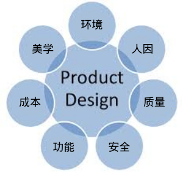
0.1.1.2 产品循环系统
产品设计系统从属于产品循环系统 (设计->制造->流通->回收)
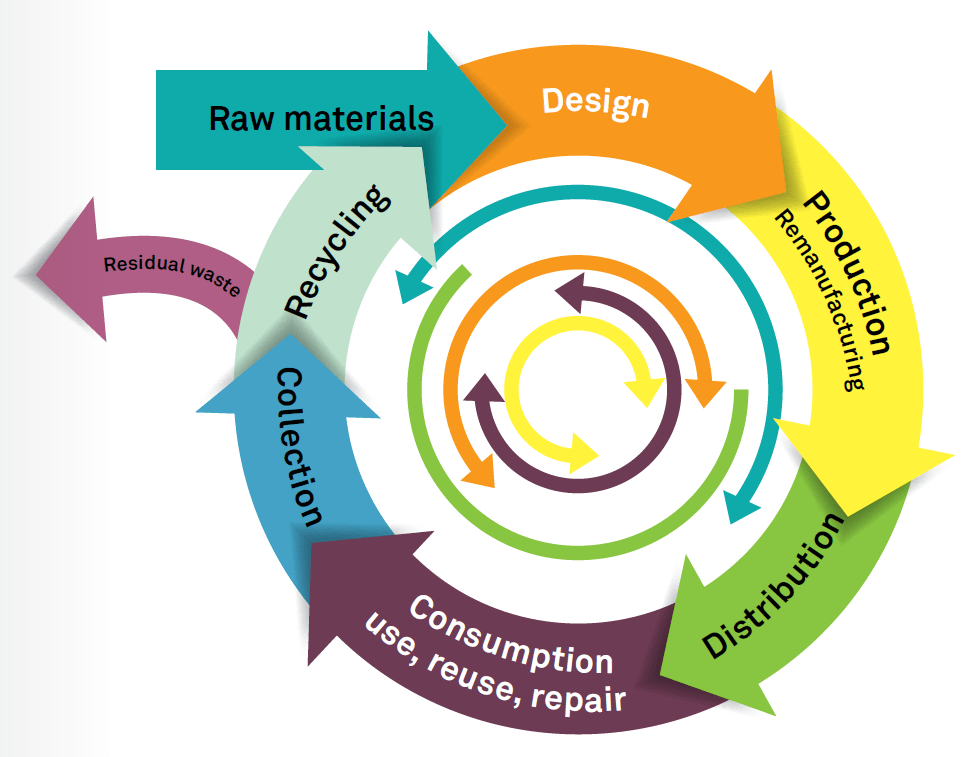
0.1.2 产品设计系统属性
0.1.2.1 整体关联性
系统整体性是各组成元素相互作用表现出的宏观涌现；
组成元素之间相互作用,相互依存。
0.1.2.2 层次性
在不同技术、文化背景下,针对不同的设计解决方案可能呈现不同的元素层次优先级。
例：产品造型质量评价（功能因素、物质因素、美学因素）
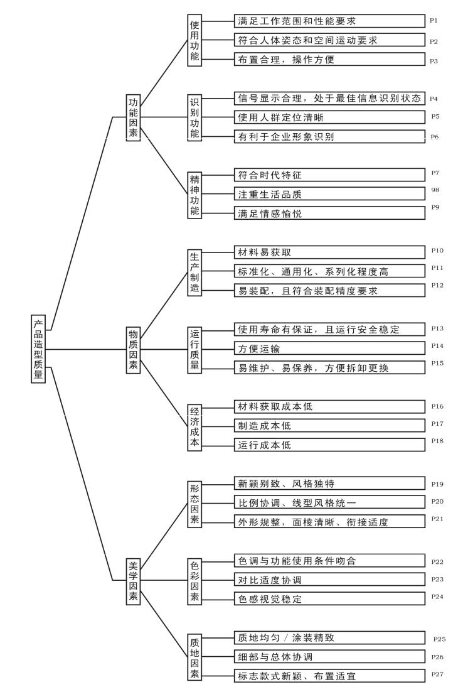
0.1.2.3 动态开放性
设计为审美、使用习惯、行为方式和文化背景不同且不断更迭的人们提供解决方案。
- 开放性:接受新理念、新知识
- 动态性:消化新元素,满足新要求
0.1.2.4 自组织性
产品设计系统内部以及系统与环境的交叉作用的结果。
市场调查、需求分析和设计定位等组成元素的环环相扣,组成一个牢固的系统,这些元素相互依存,若其中一个元素没发挥好应有作用,便会影响到与之相关的其它元素所进行的工作。故产品设计系统组成元素的动态关联体现其自组织性。
0.2 产品的系统化特征
随着科技发展、学科间的渗透及社会人文的变化,产品系统化特征不断强化。从社会文化和经济背景下的产品决策到科技条件下的产品生产制造(包括信息化手段,分工与集成作业的可互换生产方式),体现广泛领域的多因素相互依存和制约的过程系统。
0.2.1 产品信息化
信息本身已成为重要产品,实体产品强化为信息载体。信息化已全面融合到产品生命周期中,从产品的设计生产到推广销售和售后服务。
0.2.1.1 产品特征信息化
0.2.1.1.1 多功能复合化
随着电子信息技术的发展,通过改进产品结构和零部件电子元器件的组成,扩大了同一产品的功能及使用范围。如:集收、录、唱、视于一体的家庭影院,在扩大功能的同时利用数字技术提高产品效果和精度。再如集复印、扫瞄、存储、打印为一体的复合式办公设备。
0.2.1.1.2 便携化
电子元器件的大量应用及信息技术的发展,使产品结构得以改良,零部件数量减少,体积缩小,重量减轻。使产品便于操作、携带,运输及安装,同时节约能源和资源,降低成本。
- 电子元器件替代部分机械零部件
- 新材料的支持。如,轻薄、高强度钛合金、工程塑料
- 信息技术的应用和计算机辅助设计与制造、精密机床、激光切割、亚微米刻蚀等技术的应用
0.2.1.1.3 智能与知识化
把人们通过学习才能掌握的知识和技术转化到产品中,如各类智能产品:自动吸尘器、送餐机器人、儿童学习机器伴侣。
0.2.1.1.4 精神化
对品味的追求,包括美学价值和象征意味等精神文化价值。
0.2.1.2 产品设计信息化
0.2.1.2.1 网络化协同设计
遵循“开发->设计->样品试制->修改设计->工艺准备->试生产->生产"的固定顺序进行产品开发。
初期就由开发设计人员、质量控制人员、生产制造人员、营销人员、协作厂家及用户代表等协同工作,对合理性、可行性等因素加以控制,以便及早发现,寻求满足新产品性能的技术及满足目标成本的材料和合理的加工工艺。
从设计一开始就考虑产品整个生命周期中从概念形成到报废处理的各种因素,包括质量、成本、进度计划,充分利用企业一切资源,通过易制造性,缩短上市周期来最大限度满足用户要求。
利用计算机的数据处理信息集成和网络通讯,发挥参与人员的集体力量和团队精神,将新产品开发研究设计和生产准备的各种工程活动尽可能并行交叉地进行,以缩短周期,提高质量。
0.2.1.2.2 信息设计的技术支撑
- CAD (Design)
- CAE (Engineering)
- CAPP (Process Planning)
- CAM (Manufacturing)
直接从模型或实物获得几何数据,转化成零件图纸和加工程序。将手工产品、甚至艺术品在短时间内加以复制,进行批量生产。
在CAD/CAM技术支持下,采用粘结、熔结、聚合作用或化学反应等手段,有选择地固化液体材料,快速制作出所需形态的零部件。
以计算机仿真、智能推理和预测为基础,对制造信息动态操作,虚拟“制造过程”及“产品”,甚至产品“消费”或“损耗”过程。以真实制造信息驱动虚拟设备,“加工”出虚拟却贴近实际的产品,并通过先进传感技术和声像技术,构成身临其境的人机界面,提供虚拟消费,或提交虚拟试验与分析。与实际制造比较,具安全性、经济性和速效性。
用计算机收集整理用户对产品质量的需求,并转变成生产时间、成本、性能值,以此调整生产系统,指导设计。确保顾客和市场反馈信息精确转移到产品开发每个阶段的有关技术和措施中去。在确保产品使用性能前提下,减少产品冗余功能,降低成本,提高质量和延长寿命,使产品尽可能无维修,零件适时报废或回收利用。
0.2.1.3 产品制造信息化与智能化
0.2.1.3.1 信息化促成精益生产、敏捷生产和柔性生产方式
应对个性化需求和复杂精细、功能多样的产品制造要求。
- 精益生产：消除品种切换、产能不足或过剩的浪费。
- 柔性生产：是精益生产的组成部分,高度适应市场需求变化,通过数控机床等通用设备方便品种切换。
- 敏捷制造：以市场为导向,组织企业生产,并保持产品开发的技术领先。
0.2.1.3.2 自动化机器生产机器、控制机器
计算机技术广泛应用于设计开发系统、生产系统及管理系统。工业化使人的肢体得以延伸,信息化使人的大脑得以延伸,使人们从一部分脑力劳动中解放出来。
0.2.2 产品系列化
相互关联的成组、成套产品
0.2.2.1 系列化形式
0.2.2.1.1 品牌系列
如,同一品牌的家用电器
0.2.2.1.2 成套系列
由多种独立功能产品组成一个产品系统。如,成套办公产品,既有各自功能,又组成完整的办公系统。
0.2.2.1.3 单元系列
单元产品之间具有某种相关性和依存关系,构成完整的产品系列。如,母子电话机、儿童手表与父母手机相连等。
0.2.2.2 系列化意义
0.2.2.2.1 商业意义
通过增加产品覆盖面和提高产品适应性来提高市场竞争力。系列产品以多变的功能或要素组合,适应多极市场格局和快速变化的市场需求。
0.2.2.2.2 生产意义
灵活多样地小批量生产多种产品或定制单件特种产品。随用户需求变化和产品改进,开发重新组合的换代产品,无需全新产品替代老产品。跨地域、跨行业分工协作模块化生产。如航空器。
产品系列化设计出一系列标准模块,通过成套设备大批量刚性生产,使生产成本、存贮费用、用户耗费维护和修理费达到最低。如电气开关和插座,通过标准组件的不同组合方式形成不同规格和功能产品。
0.2.3 产品商品化
企业为谋求生产系统快速反应市场变化,打破生产和营销的分离状态。
生产企业调整组织结构、管理体制及工作方式,向着产品设计、制造、流通、市场连接紧密化、一体化的方向努力。
0.2.4 产品生态化
生产制造业已成为大量废弃物(包括物料废弃物、能源废弃物和产品使用终结废弃物等)的主要源头。只用“见污治污”的未端治理方式不能从根本上解决污染问题,需从“绿色设计”入手。
- 立足产品或产品部分可重复使用
- 立足产品或产品部分可回收翻新多次利用
- 产品在使用寿命完结时可安全地进行处理
绿色产品在生命周期全程中,符合环保要求,对环境无害或危害极少,资源利用率高,能源消耗低。
绿色设计(生态设计)着重考虑产品环境属性,即可拆卸、可回收、可维护、可重复利用等特性,并确保产品应有的功能、使用寿命和质量。
0.2.5 产品多元化
- 满足不同年龄段消费者需求
- 满足不同性别消费者需求
- 满足不同文化背景消费者需求
市场需求趋于多样化、个性化,开发采用新技术、新材料、新结构或新形式的全新产品。
0.3 思考题
结合设计案例简述对产品设计系统观或产品系统特征的认识
- 可以综述,也可以对某一或几方面重点论述,但必须有明确主题。
- 不少于1500字,可配插图。
- 3月3日(周日)23:00前发送到anhongz@outlook.com
- 文件名:学号姓名标题
- 文件类型:Word或PDF文档
1 产品系统设计概述
1.1 系统基本概念
1.1.1 系统论
核心思想: 整体观 (一个有机整体由多要素相互作用实现新的功能或更好的性能)
贝塔朗菲 (美籍奥地利理论生物学家)
- 《关于一般系统论》
- 《一般系统论的基础发展和应用》
1.1.2 系统定义
系统是由若干要素以一定结构形式联结构成的具有某种功能的有机整体。
表明要素与要素、要素与系统、系统与环境三方面的关系。

1.1.3 系统组成
1.1.3.1 系统组成条件
两个以上的要素组合而成具有一定结构的整体,可看成一个系统。
- 条件一:包含至少两个元素;
- 条件二:元素按某种方式相互联系。
1.1.3.2 系统组成特性
- 动态性: 系统中各个组成部分的相互作用和整体的发展变化。
- 层次性: 系统本身又是它们从属的更大系统的组成部分。
1.1.4 系统分类
1.1.4.1 自然系统 / 人工系统
1.1.4.1.1 自然系统
1.1.4.1.2 人工系统类别
- 人工物质系统:人对自然物进行加工而获得的系统
- 社会系统:一定社会历史条件下,人们组成的一定的社会系统
- 理论系统:人们对自然与社会进行认识而建立的科学理论体系
1.1.4.2 简单系统 / 复杂系统
1.1.4.2.1 简单系统
线性,可还原。自然界中非生命事物及规律抽象成一种简单的、受有限因素影响,能被还原和重复的系统。如微积分、牛顿力学、机械结构、理想气体。
1.1.4.2.2 复杂系统
非线性耗散结构,远离平衡的开放系统,在不断与外界交换物质和能量过程中,通过内部非线性动力学机理,自动从无序状态形成并维持在时间、空间或功能上的有序结构状态。如细胞、生物体、大脑、社会组织、生态系统等。
1.1.4.3 开放系统 / 封闭系统
1.1.4.3.1 开放系统(open system)
与环境间既有能量交换又有物质交换的系统。
在环境发生变化时,开放系统通过系统中要素与环境的交互作用以及系统本身的调节作用,使系统达到某一稳定状态。因此,开放系统常是自调整或自适应的系统。
1.1.4.3.2 封闭系统(closed system)
与环境间只有能量交换而无物质交换的系统。
1.1.4.3.3 隔离系统(isolated system)
与环境间既无能量交换又无物质交换的系统(理想状态)。(例：密闭储罐)
1.1.4.4 静态系统 / 动态系统
动态系统和系统的运动不同。运动是系统的基本属性,一切系统包括静态系统都在不断地运动。唯有系统在运动中状态随时间发生明显变化的,才是动态系统 (如:城市的交通系统或森林的生态系统)。
1.2 产品系统概念
1.2.1 整体与部分
1.2.1.1 人的整体与部分
团体成员因所承担角色发挥不同作用,如能各负其责,团结合作,组织精良,就能发挥团队优势,完成个体难以企及的任务。
1.2.1.1.1 一个工厂同时生产三种产品,可采取两种方法
由三个设计师分别设计,结果可能三个产品没有共通之处,如:材料、部件、装配方法、尺寸、大小、形状、加工方法、成型手段、表面处理。
协同、合作、交流,经过缜密计划,寻求共同之处,通过信息、资源的共享,节约时间,提高效率,降低成本。
1.2.1.2 物的整体与部分
1.2.1.2.1 个体
一件产品可被视为具某种结构和功能的个体,即由不同材料和工艺制造的部件组成的整体。
1.2.1.2.2 系统
一件产品也可被看作一个由各种要素或子系统构成的系统。构成产品的要素可以是某个部件或构件,也可以是一个操作系统或元器件。要素的品质和组成结构影响系统整体质量。多个不同的产品,如在目标诸方面具有统一性,可能集成为一个体系。
1.2.1.2.3 类别 (种与类)
一个类型的产品包含各种品种,如家具类产品包含木制品和金属制品等。系列化产品是种与类系统关系的具体形式。
- 层次分类法:体现产品系统构造中的逻辑关系,其相关性明显,依存关系突出。
- 平行分类法:反映系统构造的可塑性。
1.2.2 产品系统构成
产品系统与任何系统一样,宏观由物质、能量和信息构成。
存在方式和属性上表现为要素、结构和功能因素。
1.2.2.1 产品系统构成之要素
一个产品包括功能、结构、材料、工艺、色彩、纹理和界面 (信息产品) 等要素。各个不同产品也会组成系统,这里产品就成为子要素和子系统。
1.2.2.2 产品系统构成之结构
若干要素相互联系相互作用的方式。结构是对系统内在关系的综合反映,是系统保持整体性及具有一定功能的内在依据。系统结构具有以下几个方面特征:
1.2.2.2.1 有序性(关联性)
系统按一定规律构成自身特征,通过一定的时空状态体现。
- 矩阵结构―――表示单位与单位之间的关系
- 树形结构―――将各单位按级分层,构成层级体系
- 网络结构―――单位之间相互联系,表示集团或群体
1.2.2.2.2 整体性
结构内部诸要素之间的相互联系和作用,形成一个有机体。以通讯系统为例,网络作为整个系统结构,使该通讯系统中各要素在一定秩序下形成一个整体,保持整个系统的正常运作。
1.2.2.2.3 稳定性
系统结构的有序性和整体性,使内部诸要素之间的作用与依存关系产生惯性,显现出动态平衡,维持着系统的稳定性。
如当手机需求量增加,移动通讯系统扩容,负载能力加强,促进系统结构优化:无论哪个环节发生变化,其它环节必然与之相适应。这就是系统内部通过涨落保持稳定。
1.2.2.3 产品系统构成之功能
系统与外部环境相互联系和作用过程的秩序及能力称为系统功能。系统功能体现了与外部环境之间物质、能量和信息输入与输出的变换关系。外部环境包括用户使用情景、生态保护、社会文化、经济发展(包括企业赢利)和技术支撑等。
功能是一个过程,体现系统与外部作用能力,由系统整体运动表现,是系统内部固有能力的外部体现。系统功能的发挥,受环境变化和系统内部结构制约。系统与环境相互作用演化,有可能使系统改变或失去原有功能。
1.2.3 产品系统特性 (意义)
专注整体与部分 (整体性) 以及与外部环境 (综合性) 之间的相互关系,找到处理问题的最佳或最适合的方法 (优选性)。
1.3 产品系统设计思想与模式
设计概念和领域的不断扩大及系统观念的强化,现代产品设计已将对象事物当作一个整体系统认识和研究,从全局出发,将各组成部分看作是子系统或要素,通过整合,建立有机联系以及系统与环境之间的有机关系。
1.3.1 产品系统设计时空观
1.3.1.1 多种构成
产品设计是一个由多要素和多方法构成的过程系统,需考虑从产品诞生到消亡的整个生命过程。产品开发初期需设计师能动的发挥,而功能实现则需设计内容匹配具体的制造方式 (大批量或小批量定制),并考虑生产技术成本等问题。
1.3.1.2 动态变化
产品设计过程是一个动态开放的与外部环境交互的过程。从产品战略到市场营销 (产品战略 -> 基础研究 -> 市场调查 ->产品企划 -> 产品开发 -> 产品设计 -> 技术开发 -> 生产 ->营销),经多个环节,产品要素不断变化和调整,形成动态设计系统。
1.3.2 产品系统设计关联要素
目标 -> 途径 -> 策略 -> 工具 -> 程序
- 目标:明确需求。如:如何保持公用筷子卫生?
- 途径:实现目标的途径或有若干条,如:一次性筷子或筷子消毒器 (回收利用)
- 策略:模仿设计、改良设计或全新设计。机械式或微电脑全自动筷子消毒机
- 工具:为贯彻策略,须有效工具保证 (欲善其事,必利其器)。 如:原型草图、虚拟设计、快速成型
- 程序:工具运用须有合理有效的操作程序。优化程序有利于提高功效和时效,降低设计成本。
1.3.3 产品设计内部系统
产品设计内部系统着重于产品设计开发过程,包括产品设计工具、方法、流程和范畴 (设计对象)。
1.3.3.1 产品设计工具系统
1.3.3.1.1 硬工具
计算机、(软件)、纸、笔等
1.3.3.2 产品设计方法系统
1.3.3.2.1 协同设计
通过网络实现群体合作开发设计,如设计师与工程师应用OnShape等网络设计软件异地在线合作完成产品虚拟模型开发;产品用户通过互联网参与到设计开发和改进过程中,用户通过网络提出各种修改建议,设计师及时修改和更新使小米的MIUI操作系统不断升级满足用户需求。
1.3.3.2.2 仿生设计
研究自然界各种事物的功能、结构、形态和色彩等,并应用到设计中。
1.3.3.2.3 通用设计
对于产品的设计和环境的考虑尽最大可能面向广泛使用者的一种设计活动。如视觉设计考虑红绿色盲人群的存在。OXO Good Grips削皮器因其高度的可用性、美观和对材料的创新应用减轻手臂患关节炎人群的使用负担。
1.3.3.3 产品设计流程系统
1.3.3.3.1 面向机会流程
新趋势 –> [识别机会]-一个机会 –> [理解机会(多方面研究)]-产品定义 –> [概念化机会(生成多个概念并作出选择)]-一个概念 –> [实现机会(构思多个产品并细化设计) –>产品提案
1.3.3.3.2 0R0流程
Object - Relation - Output
客体(要素) - 联系(结构) - 产出(功能)
系统始于不同客体如:自然资源、人力资源、材料、工艺等。在各客体之间建立结构联系,通过这些联系产生既定结果。
- 木椅由哪些要素组成,即各种客体。
- 如何将这些要素联系起来,即结构。
- 最终达到何种目的,即功能。
投入(木料、构件、工艺、尺度、色彩、木胶、镙钉、人体工学)[要素] –> 转换(造型、构造、连接)[结构] –> 产出(产品)[功能]
功能->结构->要素。先确定目标,如,设计项目立项 –> 确定构成方式 –> 确定要素内容
1.3.3.3.3 FBS流程 (功能-行为-结构)
Function-Behaviour-Structure ontology
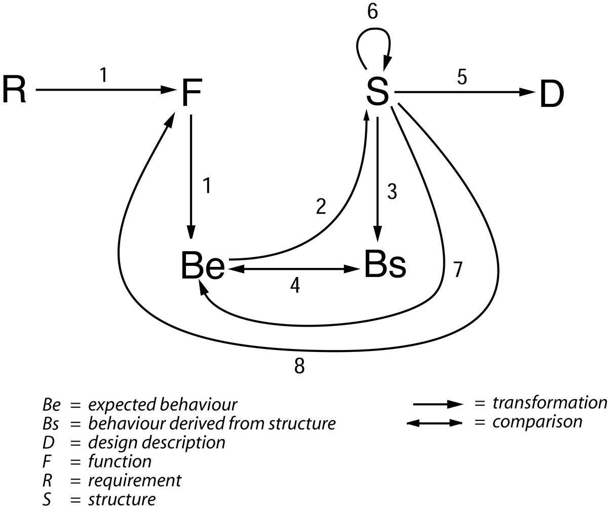
1.3.3.3.4 串行流程
将设计过程各个环节视为系统要素,要素之间的构成关系按一定顺序进行,所构成系统即为串行系统。
串行系统的突出特征是要素之间具有相关性和依次产生制约性。串行模式由于单线进程,故易于整体控制。但犹如串联电路,线路上某一元件出现故障,会造成整个线路瘫痪。
计划阶段 –> 构思阶段 –> 提案阶段 –> 转化阶段
- 计划阶段
项目 内容 企业方针 确认组织者 设计策略 评价基准 资料准备 调查资料(市场调查\消费者调查\动机调查\竞争产品调查) 研究资料(技术资料\专利资料) 发想资料(集体提案\构想资料\草图\效果图\模型\制图) 事业计划 日程 事业计划书 设计计划书 确定计划 产品构成内容\详细日程\会议记录 设计方针 设定基本条件、确定阶段目标任务书 资料整合调研 分析 方针(概念) 组织形式 确定组成人员 - 构思阶段
项目 内容 展开构思 设计日程表 构思草图、形式草图、基本尺寸图、三视图 概念制图、草模、试模、样机 检验\讨论\评价 检讨、交涉、会议记录 设计部门内部检讨、评价与主要技术资料相关者 - 提案阶段
项目 内容 总合 效果图、展示、模型、制图、提案者 设计定案 高层会议、相关者参与、记录、原型确定 - 转化阶段
项目 内容 试制原型 细部做法书、详细图、组装图 修正任务书、试验数据 确认 指出修正点 认可 会议记录 量产试制 委托修正 认可量产试制原型
构想设计、确立概念 –> 初步设计1:展开构思 –> 初步设计2:按既定目标展开设计 –> 实施设计1:按既定目标展开设计 –> 实施设计2:深化设计 –> 发布设计
| 项目 | 子项目 | 作业内容 | 例会 | 技术支持 |
|---|---|---|---|---|
| 构想设计 | 确立概念 | 收集资料(市场研究服务、需求研究)\ 现有产品研究\技术条件分析\各类咨询 | 确立基本理念、确定概念 | 提供相关资料及信息 |
| 初步设计 | 展开构思 | 构思草图展开\基本设计思想(构成、功能、造型、构造) | 决定设计方向 | 核对技术条件 |
| 按既定目标展开设计 | 设计草图展开\草模制作\使用状态研究\初步色彩计划\可行性研究 | 初步设计定案 | 提出生产技术要求 | |
| 实施设计 | 按既定目标展开设计 | 外形尺寸草案\外观效果图\设计模型表现 | 设计定案 | 提出生产技术要求 |
| 细化设计 | 设计制图\色彩计划\视觉表示\细部处理\表面处理\生产工艺研究\可靠性分析 | 完成图纸 | 可行性论证 | |
| 发布设计 | 设计报告书\样机(手板)\部分图纸修改 | 完成图纸手板 | 修改 |
1.3.3.3.5 并行流程
并行流程是以要素的网络结构为基本特征,对产品及相关过程集成、并行设计的系统化流程。设计一开始就考虑产品整个生命周期的各种因素,包括概念形成、需求定位、可行性、设计实施、生产制造及市场推广等,参与者由不同专业领域成员组成,如决策人、市场研究者、设计师、工程师和营销人员等。各组成部分形成网络关系 (或包括部分串行流程) 相互协同。
并行流程避免了时空顺序关系 (串行) 的制约,更具可靠性。通过并行流程各单元的协同关系可及时修正由于决策和判断错误导致的总体失误。并行协同流程可最大限度避免错误,减少重复和变更,降低成本,提高效率。
并行流程改变了传统的只在产品定型时才导入设计的做法,而使设计介入整个开发过程,避免和减少反复、变更及浪费,对新产品研发(R&D)至关重要。
1.3.3.4 产品设计范畴系统
- 平面产品设计:图书、宣传册、卡片、招贴等
- 立体产品设计:交通工具、家用电器、电子产品等
- 交互产品设计:物联产品、机器人等
- 服务产品设计:交通、医疗、社区服务系统设计(软硬件开发)
1.3.4 产品设计外围系统
1.3.4.1 产品绿色生命周期系统
- 生产制造:减少污染物排放(材料、工艺、设备、作业方式)
- 营销推广:环保包装、环保广告
- 物流运输:合理规划(运筹学),减少浪费和排放
- 用户使用:延长使用寿命、减少损耗与排放
- 回收利用:易拆分,再加工
1.3.4.2 产品设计管理系统
- 市场:5W2H<经济>
- 设计:功能、结构、形态 <实用、美观>
- 工程:材料、工艺<可靠>
- 市场-设计:想拥有的 (产品吸引力)
- 设计-工程:好用的 (人因)
- 工程-市场:有用的 (安全可靠、功能成本)
- 市场-设计-工程:以人为本
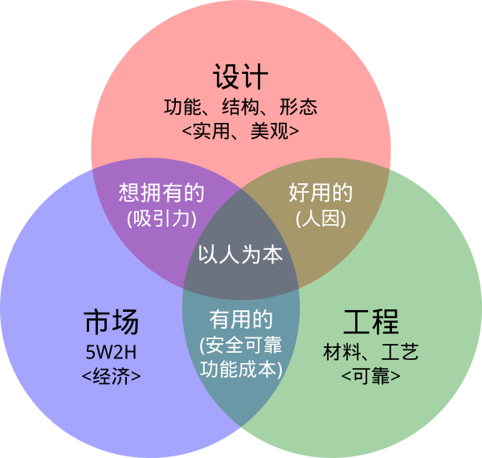
1.4 产品系统设计案例
1.4.1 布劳恩袖珍电唱收音机组合
1959 模块化系统设计
布劳恩公司与乌尔姆造型学院合作使设计直接服务于工业。1959年布劳恩推出袖珍电唱收音机组合。其中的电唱机和收音机是可分可合的标准件。其后很多设计都具备这种模块化特征(功能和结构),如布劳恩1980年生产的高保真音响系统。通过系统设计使标准化生产和多样化选择结合起来,以满足不同需求。
1.4.2 IBM 公司识别系统
1956 品牌化系统设计
第二次世界大战后,批量生产逐渐集中于大公司。产品种类很少,一定范围的产品变得越来越相似,企业产品与竞争对手的产品差别不大。这时企业的整体形象,而不是单个产品的形象变得更加重要。不少公司建立了自己的识别体系。国际商业机器公司(IBM)在1956年任命设计师诺伊斯为设计部主任,他对IBM公司的设计进行了全面的改造和统一管理。诺伊斯对公司的产品外形进行了标准化和系统化。
1.4.3 Alessi 系列产品 THE CHIN FAMILY
2007 系列化系统设计
用清朝肖像设计厨房产品,如计数器、胡椒粉瓶子、刨子和鸡蛋盒。Alessi具有意大利设计特点:热情活泼、鲜艳的颜色、情感化、有个性等。这是一组经典的系列化产品,体现于产品风格和组合的系列化。
1.4.4 Odin 有机蔬菜供应服务系统
1983 服务化系统设计
Odin Holland (www.odin.nl) 在欧洲各国进出口蔬菜水果,运往蔬菜商场或提供订购服务。消费者每周收到一纸袋有机水果和蔬菜及食谱,货源通常来自附近有机蔬果店,由Odin筛选,保证质量,且运输成本最小化,但冬季,有些食物是进口的。Odin为种植者提供指导,基于顾客对特定蔬菜需求预期进行规划种植。
服务系统达到单独产品很难做到的经济效益和环保效益,但需系统化考虑多种要素,如利益相关者的关系(购买者、蔬果种植者)、经济因素、成本和收益、蔬菜培育、验证、品牌塑造、网购系统和流程、物流运输规划、包装等。
1.4.5 小米
2010 协同化系统设计
“为发烧而生”是小米的产品理念,小米手机、MIUI、米聊是公司三大核心业务。MIUI是小米基于安卓开发的手机系统,也是小米最先开发的产品,并首创了用互联网开发手机操作系统,即小米与网友协同设计。
1.5 思考题
从产品设计范畴中任选一类(平面、立体、交互、服务),结合一个或多个实例对其设计方法和流程进行分析总结。
- 设计方法和流程不限于课本内容,可针对具体案例阐述所用设计方法和流程,并与其它方法流程比较分析,阐明各自特点。
- 不少于2000字,可配插图和图表分析。
- 3月10日(周日)23:00前发送到anhongz@outlook.com
- 文件名:学号姓名作业二标题
- 文件类型:Word或PDF文档
2 产品系统设计要素
2.1 系统设计内部要素
通过系统内部各要素的有效组合来实现产品价值,并满足外部要素的要求。
功能要素、结构要素、形态要素、材料要素、色彩要素、人因要素和环境要素
2.1.1 功能要素
功能是指产品所具有的效用,并被接受的能力。产品实质上是功能的载体。设计与制造针对依附于产品实体的功能而进行,用户购买的是产品实体所具备的功能,在使用过程中可能会产生一些新的功能(如:把书当枕头)。在支撑产品系统的诸要素中,功能要素是首要的,它决定着产品以及整个系统的意义。功能回答“这是什么”和“用来做什么”的问题。
2.1.1.1 功能分析
明确用户对功能的要求,由功能到结构可以克服由结构到功能的局限。
2.1.1.1.1 功能定义
产品和零部件或构成要素作为功能的载体 (主语),功能发挥一定的效用 (谓语及宾语)。
如:手表(主) 显示(谓) 时间(宾)。
从(抽象)功能描述出发,摆脱实体结构和材料特性束缚,利于设计出实现该功能的新结构、材料和工艺。
2.1.1.1.2 功能分类
使用者需求变化,会影响到功能的必要性。必要和非比要、主要和附属功能会在某种情况下发生转换(相对性)。在设计实务中,剔除不必要功能可降低成本,减少误操作。
若一功能是另一功能的目的,而另一功能是此功能的手段,则把作为目的的功能称为上位功能,作为手段的功能称为下位功能,两者是从属关系。与同一上位功能相连的若干下位功能是同位功能。
2.1.1.1.3 功能系统图
功能系统图是产品结构系统的功能抽象表现,显示设计出发点和思路,反映功能需求。建立功能系统图先从基本功能开始,根据目的和手段关系建立系统骨架,然后找到二次功能的目的功能,将二次功能与其目的功能相连,形成树状结构。
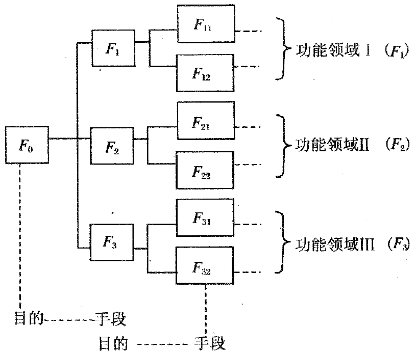
2.1.1.1.4 功能整理
功能之间存在依存关系(目的-手段),通过系统图明确设计概念,准确定位功能,发现并取消不必要功能,提高产品竞争力。但所发现的没有用或目的不明确的功能也有可能是功能定义不准确造成的。
通过功能整理,建立功能系统,根据功能系统确认不同级别的功能领域,再确定部件设计,使设计更有针对性、合理性和可行性。
| 类别 | 固有功能 | 转移的功能 |
|---|---|---|
| 使用功能(基本) | A吹风纳凉 | A1仿自然风 |
| 使用功能(附属) | B时钟\照明遥挖 | B1仿昆虫鸣叫 |
| 心理功能 | C豪华的\高档的 | |
| 象征功能(明示) | A+B+C | |
| 象征功能(暗示) | F(A, B, C) |
- 编制功能卡片
- 选出基本功能和辅助功能
- 明确功能之间的关系
- 完成功能系统图
2.1.1.2 产品功能设计
通过功能分析,设定具体目标,实现目标的设计过程就是功能设计。
功能实现面临两方面问题:结构原理和构成形式(造型),往往并不能都由工业设计师完成。要形成市场分析、功能设计、工艺设计等多方人员的设计共同体进行协同设计。
2.1.2 结构要素
产品结构是产品内部各要素所占比重和关系之和的体现。
功能是系统与环境的外部联系,结构则是系统内部要素的联系。结构是功能和形式的承担者,受材料、工程、工艺、商品使用环境等方面制约。
2.1.2.1 产品结构多重含义
2.1.2.1.1 单个产品结构 (外部结构与核心结构)
外部结构指外观造型及相关整体结构,是外部形式承担者和内在功能传达者。通过整体结构使元器件发挥核心功能,且实现界面功能(造型)。具备材料、工艺知识及经验是优化结构的关键。外部结构须在外部条件和内部因素明确的情况下进行设计。
- 情况A:外部结构不承担核心功能 (必要功能),其变化不直接影响核心功能。如电话、吸尘器、冰箱等无论款式如何变,语音传输、真空吸尘及制冷功能不变。
- 情况B:外部结构是核心功能的承担者。结构形式直接与产品效用相关。如容器、家具、自行车等。其结构具双重意义:传达形式,承担功能。
技术原理系统形成的具有核心功能的产品结构。如吸尘器电机结构及高速风扇的真空抽吸原理。
由机械工程师、电子工程师设计,专业厂家生产 (标准化\模块化) –> 工业设计师明确核心结构输入输出关系, 进行系统整合。
2.1.2.1.2 多个产品的关系结构
将若干产品所构成的关系看作一个整体,将其中具有独立功能的产品看作要素。
相对于整体结构,同一目的不同功能的产品关系分离。如,电脑由主机、显示器、键盘、鼠标及外围设备组成完整系统。
由若干产品构成成套系列、组合系列、家族系列、单元系列等。产品之间相互依存、作用。
若干具有独立功能的产品相互进行有形或无形连接,构成复合功能网络系统。如,电脑相互联网,服务器与若干终端(手机、传感器)连接(物联网)等。
2.1.2.1.3 产品与空间的关系结构
产品在空间上的构成关系,产品与周围环境相互联系、相互作用。
“埏shān填以为器,当其无,有器之用;凿牖yǒu以为室,当其无,有空之用。"(和泥制作陶器,有了器具中空的地方,才有器皿的作用。开凿门窗建造房屋,有了门窗四壁内的空虚部分,才有房屋的作用。所以,“有”给人便利,“无”发挥了它的作用。)
功能体现于产品实体与空间本身及其相互作用。
2.1.2.2 产品结构设计要点
产品结构分为白箱结构(外部结构)与黑箱结构(核心结构),两者是不可分割的相互作用的整体。相对于黑箱结构,白箱结构存在变换空间。在设计外部结构时,往往沉溺于自由表现,而忽略来自黑箱结构或者外部因素的制约,无视制约条件是不现实的。只有树立整体观念,才有可能正确处理内外结构相互作用,结构与功能的有机关系。
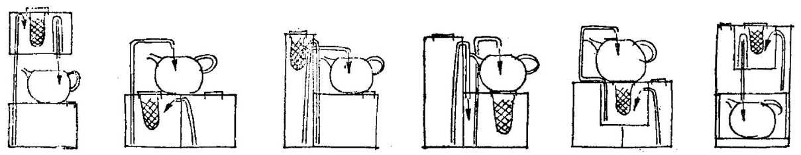
2.1.3 形态要素
2.1.3.1 形态的概念
事物在一定条件下的表现形式
2.1.3.1.1 概念形态
空间所规定的抽象形态,可表现为感知形态(以图形的形式出现),即纯粹形态(造型设计基本要素)。
- 质 (点、线、面、体)
- 量 (大小、多少)
2.1.3.1.2 现实形态
山水树木、花鸟虫鱼
产品、建筑等
通过各种技术手段创造的形态,比如设计形态
- 象征符号的形态: 齿轮表示工业、镰刀代表农业
- 模仿功能的形态: 玩具等
- 装饰形态: 各种自然物
- 模仿样式的形态: 如手枪形的打火机、汽车形的电话机等,是原形态的转用
2.1.3.1.3 形态学 Morphology
生物学分支,探索生物体形态生成和发展过程、有关机理及形态分析与分类。从设计角度看,形态即表面形式,反映具体事实。形态学在对形态分类基础上,研究各种形态的共同规律,揭示其特殊性和彼此联系,并作出理论概念和分析。
以自然形态为研究对象的形态学观点及其成果,对人工形态设计有很多启发。对人工形态的形态学分析,是以人工创造的形态,如,生活器具、建筑与城市等的各种外在特性(如形状、大小、色彩与材料等)为对象,寻求蕴含的各种内在特性(如设计意图、价值、相互关系与人的爱好等);对以上形态可视性方面与非可视性方面的对应研究,并弄清人工形态创意机理等。
2.1.3.2 形态的意义
形态是产品与功能的中介,并具有表意作用 (产品语意学)。通过形态可以传达各种信息,如产品属性 (是什么)、功能 (能做什么或怎么做) 等。
2.1.3.2.1 产品语意学
语意 (Semantic) 的原意是语言的含义,语言学研究语言的意义。
产品设计语意学将研究语言意义的方法用于产品设计,研究人造形态在使用环境中的象征特性,在形态设计时运用隐喻、暗示及相似性的手法来表达产品意义。符号学用于研究符号意义,包含指示符号、图像符号及象征符号。产品语意学通过由符号造型、抽象图形和一些与表达产品意义相关元素的排列、综合等构成方式来解释产品意义。使用者通过了解产品意义,正确有效地使用产品。
2.1.3.2.2 传达意义的形态
形态是一个符号系统,具有意指、表现与传达等类语言功能的综合系统。类语言功能的产生出于人的感知。对不同形状的按钮或旋钮、人能作出反应,如根据旋钮形状作出按、拨、旋等动作。
灰色处于纯白色环境中时看起来比实际更深 (视网膜邻近区域之间交互作用的结果 — 视错觉现象)。
色彩不变性: 人们能准确判断同一色彩在不同照度下其实际色彩并未发生变化,是因为瞳孔会自动放大或缩小,控制光通量。这也有可能是经验学习的结果。
人能感知事物,是因为人具有学习能力。眼睛能辨别方位,是由于人们触摸物体的经验。人类对空间或形态上的感知是学习的结果,感知基于过去有过的经验。
物质有许多特性,如材质、色彩等。它们虽不会移动,但能造成认识上的改变。感知的最后阶段不是将看到的东西与记忆在人脑内的东西比较,而是引导人类对环境的探究,是一种“指引行为”,如:当步行劳累时,看到的任何一个平坦的石头都具有椅子的功能;若要写字时,它可成为桌子。
2.1.3.2.3 诠释设计的形态
诠释功能由“形”完成。研究形态的意义不停在“物”的层面,把视点置于“事”的层面,通过形态传递信息,受信者(用户)在形态信息引导下,正确使用产品。使用者能否按信息编制者(设计者)意图作出反应,取决于设计者对形态语言的运用和把握。形态语言不仅要传达“这是什么、能做什么”等产品属性信息,还要让人明白“怎么做、不能怎么做、只能这样、不能那样、除了这样、还能那样”等。
形态是利用人特有的感知力,通过类比、隐喻、象征等手法描述产品及与产品相关事物。产品形态表现事物方法如下:
通过产品自身解说力,判断出产品属性。如自行车与摩托车。
- 将构成产品各部分形态加以区分:让人明白哪些属于看的(视觉部分),哪些属于可动的(触摸部分);哪些部分是危险的,不可随意碰的(通过设计让其无法轻易触及);哪些部分是不可拆解的。
- 构成产品的部件、机构、操控等部分的形态要符合使用习惯。
- 形态显示产品构造和装配关系
- 利用新奇形态激发使用者好奇心和想像力,唤起游戏心理;
- 使产品形态具有多种组合性、变换性,增强适应性;
- 为给使用者留有发挥余地,在避免误操作前提下,尽可能不使用说明。
产品处于具体环境,如建筑空间里,或自然环境中,也可能与其它产品同在一处,这些都与产品形态之间存在相互影响,包括尺度、材质等。
如何使产品具有魅力,形态是关键,不一定崭新的形态语言才会产生魅力。若能让人从形态中读出记忆中所熟悉而喜爱的信息,也能使人在对往事回顾中产生亲切感。
2.1.3.3 形态设计原则
- 稳定性:视觉感受可信赖
- 新颖性(独创性):在功能结构合理的基础上给人独特新颖的感觉
- 秩序性:统一中寻找变化,变化中追求统一
- 体量感:产品体积和大小适于人的使用
2.1.3.4 基本造型方法
2.1.3.4.1 分割
在母形基础上分割出一个或多个子形
分割事项:
- 分割比例适宜(如黄金分割比)
- 横向分割使形体更显宽度感觉
- 纵向分割使形体更显高度感觉
- 环形分割使小圆“扩张”,大圆“收缩”
2.1.3.4.2 切削
通过一到多个不同大小,不同位置的局部切割,产生造型变化。
2.1.3.4.3 聚集
将多个单体经大小、位置、数量、方向等变化,采用渐变、发射、特异等排列方式产生新的造型。
2.1.3.4.4 合并
2.1.3.4.5 渐变
2.1.3.4.6 拉伸
2.1.3.4.7 挤压
2.1.3.4.8 弯曲
2.1.3.5 形态的表现
产品形态不仅具有“物”和“事”的层面意义,还包括精神、文化及时代背景层面意义。
2.1.3.5.1 功能主义形态表现
20世纪30年代前后,在美国,为使经济危机下的产品打开局面,使用流线形设计,成了速度、效率等新时代的象征;在德国,人们对产量和质量的双重需求推进统一化、规格化的量产方式;英国也开始规格化、合理化等功能主义设计实践。
形式服从功能,强调以科学、客观分析为基础,提高产品效率及经济性;反对无理性根据的形式,反对传统样式及装饰,提倡创新。形成特有设计语汇,即净化了的几何形态。这虽然符合工业化生产要求,但简洁单纯的几何形态作为抽象功能在材料、结构上的体现,有时不能完全呈现功能多样化产品的目的性。批量生产条件下的简约化或标准化一定程度上难于满足消费市场多元化、多层次要求。
2.1.3.5.2 其他形态表现
- 趣味:产品形态设计追求符合时代潮流、摈弃千人一面的形式而面向差异化表现。如,赋于形、色以游戏要素,或将异质因素组合,造成失调感形成趣味等表现方法(与人类生活和行为相关的语言表现)。
- 多样:新材料(塑料\纳米)及信息技术应用发展,使设计形态更加多样化。塑料与电子信息产品结合形成新产品形象。同一产品领域形的变化激剧增加;且形态本身也发生很大变化,种类在增加。
- 相对:电子技术的发展,使产品设计语言表现空间发生变化。形态表现可脱离内部约束进行自由发挥,部分复杂的机械结构逐步被电子器件取代,使设计绝对化的语法和规范相对化。
- 个性:消费时代个性化需求凸显,多品种少批量的柔性生产方式形成形态表现新空间–具象、比喻、隐喻、主观等。如以自然物或动物作比喻;以尖端技术隐喻表现高科技;甚至怀旧形态。表现方法出现新古典主义、新功能主义、自然主义、折衷主义等。
为加强形态说服力和感染力,采用自然物或人造物形态特征,产生联想作用;或把握产品功能和特性,与某种自然物或人造物形态联系起来,使产品形态具有某种象征意义。
产品各部分形的处理引用过去产品的元素。在内部机构不变情况下,别具一格的外壳,成为新的卖点。寻求历史文脉将过去的形态重新组合,怀旧感的产品。
基于某个具体形态进行类比暗示及联想。“象征物与被象征物之间的共同点并非外形,而是功能"。小孩看见竹马(骑在胯下的竹竿)时,便会认为这就是马。这时的“马"是意想中的概念。竹杆成了功能替代物。尽管模仿物和被模仿物在外形上已经分离,但其功能却是共有的(马和竹马都是骑在胯下向前奔走。功能成为形的媒介,通过联系构成象征形态。
产品形态的象征作用,逐步从以视觉为中心扩大到综合听觉、触觉等知觉领域。
曲面形态变化。如照相机、电话、汽车等以复杂曲面构成,变无机性为有机性,或在形的某部分体现人体的一部分或触摸的痕迹。通过柔性生产在形的表现上有较大自由度,可创造多变的产品形象。
立体几何形式,表现为机械的、无意识感觉,被看作古典主义风格或功能主义–新古典主义和新功能主义。或暴露机件,或以几何体构形,且惯用几何圆形和弧形。
无根源形态只出于功能需要,以最基本的几何形体进行产品“包装",并在表面印上指示说明文字和图形。
2.1.4 材料要素
物质基础(石材与木材 -> 金属 -> 塑料 -> 合金及生物材料)。产品设计需考虑材料选择是否满足产品功能。从石器时代的粗糙石器到信息时代的谷歌眼镜,产品设计经历了一个改造和提升人们存在方式和使用方式的过程。
2.1.4.1 材料学与新技术
材料学是研究材料组成、结构、工艺、性质和使用性能之间相互关系的学科,为材料设计、制造、工艺优化和合理使用提供科学依据。新技术新发现能够带来材料的革新, 注重材料类别的交叉性和综合性,为设计发展提供更多可能与方向(潘顿1970用发泡塑料技术设计船体内部空间)
2.1.4.2 材料处理过程
认材-> 选材-> 配材-> 理材-> 用材
材料选择需考虑材料对产品性能和寿命的影响,符合人机要求,环保及心理需求(iMac半透明机壳)
2.1.4.3 影响材料选择的因素
2.1.4.3.1 材料性能
强度、刚度、稳定性、平衡性、疲劳特性和抗冲击性
2.1.4.3.2 使用因素
- 产品功能和使用寿命
- 产品结构和形态对材料的要求
- 安全性
- 抗腐蚀性
- 市场因素
- 材料成本
- 使用场所和人群
2.1.4.3.3 环境因素
- 温度和湿度(如温度激烈变化时某些绝缘材料会失去绝缘性,湿度过高导致某些材料精度失调)
- 冲击和振动(运输或使用过程中)
- 气候
- 环保
2.1.4.4 材料的感知特性
2.1.4.4.1 材料的触觉特性
- 生理感受:温觉、压觉、痛觉
- 心理感受:愉悦感和厌恶感
2.1.4.4.2 材料的视觉特性
材料表面的色泽、肌理、面积都会影响材料的视觉感受
2.1.4.4.3 材料的听觉特性
不同材料通过敲击和振动产生不同的音效感受
2.1.5 色彩要素
色彩是由物体发射、反射的光通过视觉产生印象的颜色集合。色彩随人们情感不同和认知差异而变化。
色彩应与产品造型相符。对同质化产品,可用色彩特质加大与其他同类产品间的不同,创造多样化、个性化和差异化。
2.1.5.1 产品色彩意义
色彩相对于形态和材质,更趋感性化,色的变化比形(受设计制造、成本的制约)的变化代价小,且较为多样。如:同一款轿车,不同色彩可以造成不同视觉效果。
GM企业特别成立色彩总体策划部门,根据人们特有的心理意识,以色彩区别不同车型,使它的产品与“清一黑”的T型福特轿车形成鲜明对照。按市场规律,一旦轿车的低价位高产量状况趋于稳定,人们开始产生各种感性需求。GM把握这一点,推出具有舒适性、安全性、追求卓越的形和色的K型轿车,在竞争中胜出。
2.1.5.2 产品色彩设计
2.1.5.2.1 色彩与功能
色彩同形态一样具有类语言功能,能传达语意。利用约定俗成的习惯,通过色彩产生联想。或利用色彩符号暗示功能,传达意图。色彩不仅表示单个商品特性,也反映商品群体形象及企业形象和理念。
- 色彩结合形态对功能进行暗示。如,电器按钮或某部位用色强调,暗示功能。
- 以色制约和诱导行为。如红色警示,绿色畅通,黄色提示。地域民族的不同对色的感受也有差异。但许多指示性色彩已存在国际标准,如红色表示STOP,绿色表示START。
- 以色象征功能。象征功能的色彩有些根据色彩本身特性确定,或约定俗成。如,我国邮筒用邮政专用绿色,有的国家则用橘红色。
- 用色彩表示商品属性(功能、形态、材质)
- 色彩表示与商品属性和形象相适应
- 以色彩体现工作和生活环境舒适性
- 所用色彩不仅适用于单位产品,还要适用于纵横系列
- 用公众持续看好的、富有生命力的色彩
- 色彩要体现企业品质
2.1.5.2.2 色彩与形态
- 理性:色彩可提高产品形态认知度。如电脑、复印机等办公设备多为灰黑色系,办公产品的心理感受属理性范围,色彩属性与形态属性相一致。
- 感性:但随追求感性化时代的到来,产品彩色化倾向明显,并创造品牌形象如苹果G3、G4电脑的色彩设计,突破人们对该类产品一惯的认识—半透明的色和富于感性意味的形结合。
- 同一产品造型,用不同色彩表现,形成产品纵向系列。
- 对同一产品形态用不同色彩分割(根据产品结构特点、用色彩强调不同部分)。在视觉上影响人对形态的感觉,即使同一造型,会因色彩变化而对形态感觉有所不同。
- 用同一色系统一不同种类产品,形成产品横向系列,具有家族感。是树立品牌形象的常用做法,即便不同厂家生产的产品,营销企业也可用色彩将其统一在本企业的品牌之下。
- 以色彩区分模块,体现产品组合性能。
- 以色彩装饰,产生富有特征的视觉效果。
2.1.5.2.3 色彩与象征
- 不同民族、地域文化对色彩理解不太一样。但人类感性具有共通的一面,对色彩直观感受存在很多共性。
- 象征作用产生于联想,不同色彩感觉会导致不同色彩联想(色彩原理及人的认知心理)。
- 产品色彩包括功能性和情绪化。其中,人性化因素不断增加,且产品色彩具有时代象征意义。
2.1.5.3 色彩计划
通过对产品设计需求和营销策略分析,以配色原理、色彩学理论为基础制定色彩使用计划,考虑用户认知与心理需求。
2.1.5.3.1 色彩计划特性
- 科学化:色彩认知心理学,符合消费心理和市场需求
- 类别化:使品牌个性化,塑造品牌形象,增强企业识别度
- 阶段化:根据消费者需求和企业策略分阶段逐步实施色彩方案
- 系统化:注重色彩与功能、结构、形态的关联性,使设计一体化。
2.1.5.3.2 色彩计划程序
- 情况调查:收集分析资料–企业特点、竞争对手、市场需求、消费心理、产品定位,明确企业优势
- 表现概念(概念定位):根据调查结果确立企业形象、经营概念、消费环境概念,并符合时代特征。
- 色彩形象(色彩匹配):将各种概念与色彩匹配,确立企业标准色、市场用色及商品用色。
- 效果测试:对色彩进行生理、心理和物理测试,以验证形象概念。
- 管理监督:为保证不同设备输出颜色与规定相符,需将色彩数值化,制作专有色样本。
2.1.5.4 色彩管理
从企业总体目标出发,在从产品计划、设计到营销、服务等企业活动所有环节中,以理性、定量化方法对所用色彩的色相、明度、辉度进行统一控制和管理。
2.1.5.4.1 色彩管理目的
- 对异地生产的产品和部件色彩标准化(产品或企业标准)控制。
- 对互换式生产方式下的产品进行色彩控制。将产品某一部分更新,使这一部分与产品其它部分互换,以最小成本最快速度推出新产品。互换产品的色彩仍要与色彩计划保持一致。
- 企业形象战略需要。色彩计划贯穿企业活动各方面,包括产品、宣传、促销,也是企业理念的象征。
设计师须与表面色彩技术处理部门联系,通过原材料供应商或生产厂家提供的色标选定产品色彩。
2.1.5.4.2 色彩管理实施步骤 (3C)
- 设备校正Calibration:调整设备配色,以通过色彩测试。
- 设备特征化characterization:输入一系列颜色值,测出设备产出颜色值,建立输入颜色值和产出颜色值之间的对应关系,并将其转换关系记录在特征化文件中。
- 颜色空间转换Conversion:将原设备的颜色空间转化到相应的色彩感觉,再将色彩感觉转化成目标设备的颜色值。
2.1.5.4.3 色彩管理用工具
- 标准光源目视比色箱:在标准光源箱里看色可避免因外界光线的介入所引起的色彩偏差
- 电脑测色仪:包括色差计、印刷网点密度仪、屏幕亮度灰度计
- 国际标准色卡:使用色卡,除去了寄送样品的麻烦,报一个色卡号码即可
2.1.6 人因要素
为实现产品与人的匹配,在设计中须考虑有关人的因素。包括人类工程学要素、心理学要素和社会学要素及审美要素等。产品从完成设计最终到达消费者手中,需各专业人员协作完成。
2.1.6.1 生产者
生产者的工作效率和质量关系到产品成败。设计是影响效率和质量的前提条件。如在设计时充分老虑生产线与装配流程,及工艺特点和生产管理方式,最大限度与之相适应。同时考虑人的操作特点,尽可能减少装配部件和装配工序,优化装配方法,降低组装难度等。这样既节省时间,又提高质量。产品在生产过程中的储运方式也应重视。
案例:某企业空调生产线最后程序由人工对两个不同型号机型分别进行包装封箱,两个机型仅在某个局部有细微差别,包装箱几乎一样,只有箱体下角的F-1和E-1字样区别,经常造成机型与包装箱不符的错装。
2.1.6.2 营销者
销售人员的能动性至关重要。设计时须根据营销活动特点考虑产品与营销者的匹配。如销售时的陈列方式,广告部门根据产品特点进行视觉设计。若产品在设计阶段就考虑产品展示性,有利于促销时的二度创造及不同条件下的促销行为(如现场演示,适应各种卖场包括百货店或超市等不同展示陈列环境)。设计也应考虑产品销售过程中的送货、安装等服务,包括移动、运输、仓储、商品分类等。
2.1.6.3 使用者
产品效能只有通过人的使用才能发挥,而人能否正确、有效地使用产品取决于产品本身是否匹配人的身心。
人类工程学是对人的生物特性的研究(基础),以及人与产品、环境等关系合理化的研究(应用)。
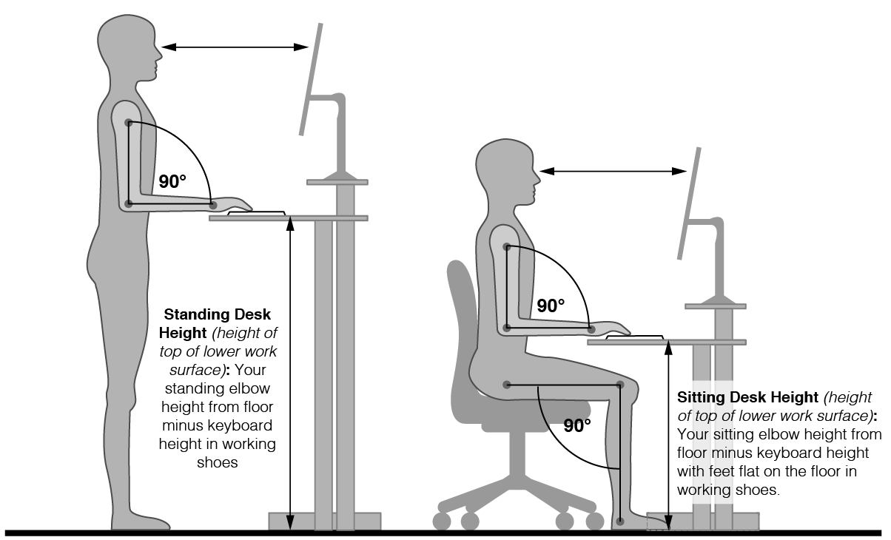
2.1.6.4 回收者
产品更新周期日益缩短,应使废旧产品继续产生价值,如整体回收和拆解回收。
- 分解:如计算机,部分再生利用,部分重复利用,其余成为垃圾
- 分类:
- 堆集:设计应考虑堆放效率,节省空间,使回收工作轻松有效。
- 运输:
- 防污染:
2.1.7 环境要素
将环境要素作为产品设计、开发、生产过程中的评价指标不仅是可持续发展的需要,也关系到每个产品生产者、使用者的实际利益。即重视产品与环境的关系,环境与人的关系。考虑环境要素的绿色设计是面向产品全生命周期的设计,以解决产品在生命循环的每个环节造成的环境问题。
2.1.7.1 产品生命周期
2.1.7.1.1 商业产品生命周期
从市场营销角度看,新产品投入市场到退出市场的生命周期分4阶段:引入期、成长期、成熟期、衰退期。

2.1.7.1.2 绿色设计产品生命周期
绿色产品生命周期从原材料加工、产品生产制造装配、包装运输、销售使用,到回收重新利用全过程:
- 原材料投人阶段;
- 产品规划、设计与生产制造阶段;
- 产品销售和使用阶段;
- 产品维护和服务阶段;
- 废弃、淘汰产品的回收、重新利用阶段。
产品生命周期各阶段都会有物料输入和输出,有些进入人为循环再利用,有些则进入自然循环,可能造成环境生态问题。
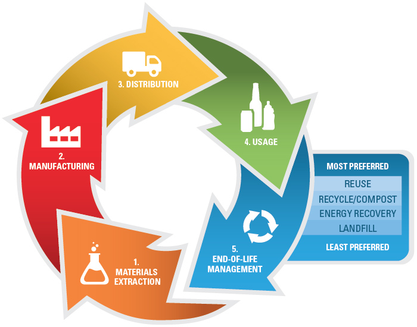
2.1.7.2 绿色产品设计的特点
- 绿色设计扩展了产品生命周期。传统产品生命周期仅从生产投人到使用为止,而绿色设计将产品生命周期延伸到下一循环。
- 绿色产品设计是一个并行协同过程。
- 绿色设计考虑环境需求,从源头做起。
- 绿色设计使构成产品的零部件材料得到充分利用,使产品在整个生命周期中能耗最小。
- 绿色设计减轻甚至消除产品生命周期末端压力,即减少废弃物、垃圾污染及环保治污方面的投入。
2.2 系统设计外部要素
与社会、经济、技术、时间、空间、用户等要素之间的相互关系及影响
2.2.1 SET要素
2.2.1.1 社会要素
社会生活和文化中相互作用的因素。设计与社会状态匹配,并促进社会发展。如为非洲设计的低成本炉灶 Baker Cookstove 减少煮食时的热量浪费和有害烟雾排放。Motorola Talkabout 对讲机解决父母对孩子的监护问题,并维持家人和孩子的良好关系。
社会、经济和技术因素的改变会创造出新的趋势和产品机会缺口。
2.2.1.2 经济要素
经济发展状况、经济结构、居民收入和消费者结构等会影响人们的消费观念。产品合理的性价比、成本控制和营销方式在提高销量使更多消费者受益的同时,企业也能盈利,并促成经济整体发展。
2.2.1.3 技术要素
对新技术和科研成果及其潜在价值的直接或间接应用。如新材料、新工艺、电子信息技术、生物技术等。蒸汽机引发工业革命,计算机助力信息产业,包括交互产品设计和服务产品设计与信息技术密切相关。
2.2.2 时间要素
2.2.2.1 产品开发所需时间(把控整个设计流程时间)
2.2.2.1.1 影响产品开发时间的因素
- 对市场与用户需求掌握程度(若需求信息掌握不足,会导致开发过程中的往复)
- 产品所需技术
- 需要整合零件数目及零件装配难易程度
- 开发工作人员数目及人员组成多样性程度
- 管理质量(若管理不到位,会导致资源浪费和各部门协作效率低下)
2.2.2.1.2 敏捷开发
敏捷开发应对产品迭代周期缩短趋势。
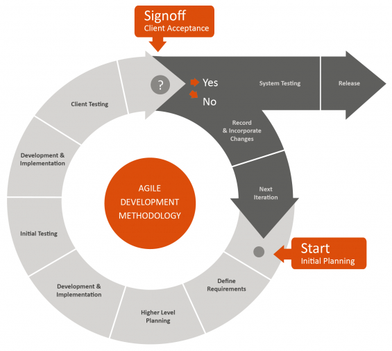
2.2.2.2 产品使用寿命
2.2.3 空间要素
2.2.3.1 实空间和虚空间
产品所占空间分为实空间和虚空间。实空间指产品本身所占空间;虚空间指不占物体的那部分空间形体,但却参与产品形成。实空间和虚空间是并存的。
以水杯为例:拿起水杯喝水时,就杯子实空间而言,水在杯子外面,但从杯子提供空间来装水而言,水却在杯子里面,杯子提供了储水空间。实空间为杯子的存在提供前提,虚空间为杯子的实用性提供保障。
2.2.3.2 心理空间
心理空间诉诸于人的视觉,不仅限于实体形态印象,同时产生心理联想。
2.2.4 用户要素
2.2.4.1 直接用户
包含使用者和消费者 (经常使用和偶尔使用的用户)
2.2.4.1.1 用户体验设计
与直接用户相关,核心在于带给用户价值感和愉悦度,而不仅是系统的实用功能和可靠性能。
2.2.4.1.2 用户体验要素五层面
- 表现层:界面和外观
- 框架层:产品各元素的位置规划,优化设计布局,提升效率
- 结构层:根据产品操作流程安排各元素和功能部件相互关系和层次结构
- 范围层:产品能实现的功能有哪些
- 战略层:产品开发的宏观目标
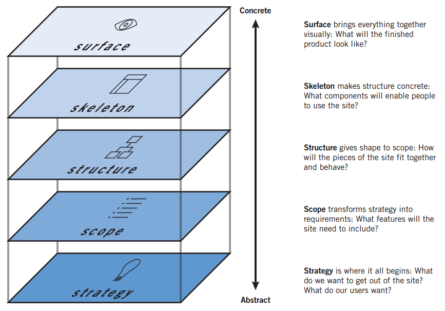
2.2.4.2 间接用户
包括产品开发人员、管理人员、营销人员、后期维修人员等。
2.3 思考题
选择一个或一类产品,列举其内部要素和外部要素的特点及作用,并阐明各要素之间的联系;然后与相关产品比较分析,找出产品缺口(即新产品的开发定位)。
- 根据所选产品特点,可重点分析其中一个或若干要素,确定优势要素,对不足要素提出改进意见(作为产品缺口)。
- 不少于2000字,可配插图和图表分析。
- 3月17日(周日)23:00前发送到anhongz@outlook.com
- 文件名:学号姓名作业三标题
- 文件类型:Word或PDF文档
3 产品创新设计思维与方法
产品创新设计思维包括发散/收敛思维，横向/纵向思维，正向/逆向思维，直觉/灵感思维，以及联想思维等；方法包括基于理解产品与用户的创新方法，基于激发集体智慧的创新方法，基于开阔、发散思维的创新方法，基于借鉴其它成果的创新方法及其他方法。
- 产品创新设计概述
- 创新设计思维
- 创新设计方法
3.1 产品创新设计概述
3.1.1 设计与创新
设计是把一种计划、规划、设想通过具体形式传达出来的活动过程。
创新是以新思维、新发明和新描述为特征的一种概念化过程。
3.1.2 产品创新设计
产品设计的本质是创新，超越已有产品，提供全新的存在形式和服务方式。
3.2 创新设计思维
3.2.1 创新设计思维概述
创造性思维是指在客观需要的推动下，以存储信息和新获得的信息为基础，克服思维定势，综合运用各种思维形式，通过分析、综合、比较、抽象，选出解决问题的最优方案；或系统化地综合信息，创造出新方法、新概念、新观点、新思想，从而促使认识或实践取得重大进展的思维活动。
设计思维以问题为导向，对设计领域出现的问题进行搜集、调查、分析，并最终得出解决方案。设计思维具有综合处理问题的能力，提供发现问题和分析问题的方法，并最终给出新的解决方式。
3.2.1.1 提高创造力的7个步骤
- 树立创造的自信心，确信一定能用某种方法解决问题，不要让自我怀疑遏制想像力；
- 打开想像力的大门，做个好奇和好疑的人，凡事多问“为什么？”寻找意外相似性和不寻常解决方法；
- 持之以恒，即使一时新的想法很少也不要灰心，而要有韧性地为得到答案不断工作；
- 保持虚心，虚心使人容纳来自各方面的思想；
- 暂时悬搁“行”或“不行”的评价，尤其在解决问题的开始阶段：
- 确定问题范围，排列问题“清单”，使造创力更加集中，并保持必要的压力；
- 发掘潜意识，使工作有张有弛，在紧张后适当放松，有利于潜意识闪现思想火花。
3.2.2 创新设计思维形式
创新设计思维是创造性思维在设计上的延伸和具体化，是思考设计问题，解决设计问题的方式。
3.2.2.1 发散与收敛
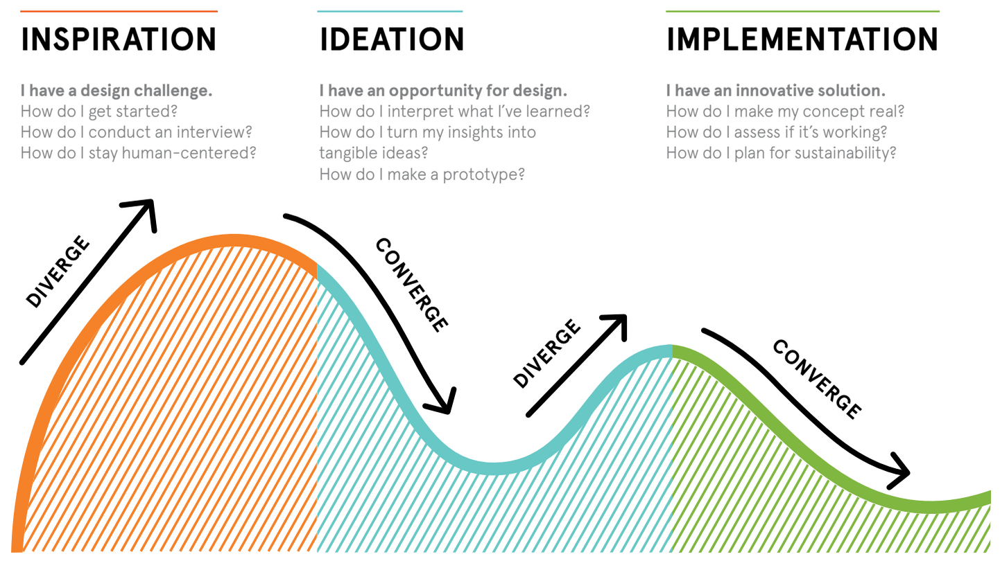
3.2.2.1.1 发散思维
发散思维是大脑在思考时呈现扩散状态的思维模式，追求思维拓展的广阔性和发散性，不受现有知识和传统观念的束缚，沿不同方向多角度、多层次的思考和探索。
求对问题的尽量多的各式各样的可能解。砖头可造房、筑墙、修阶梯、造马路、压东西、垫住停在斜坡上的汽车等等。前4个答案属习常性，后几个则是非习常性的。非习常性联想引发出新思路非常重要。
当许多不同的可能性答案提出后，有一个选优问题，需过渡到收敛思维。
3.2.2.1.2 收敛思维
收敛思维是在解决问题的过程中，运用已有知识和经验对信息进行组织和整合，目的是使思维聚焦，使结果简明化、条理化、逻辑化、规律化。
3.2.2.2 横向与纵向
3.2.2.2.1 横向思维 (空间)
横向思维是一种共时性的横断思维。具体指思维具有横向发展、宽度发展的特点。横向思维过程中，通过截取历史横面，研究一个事物在不同环境下的发展状况，并将其与周围事物进行比较，得出事物在不同环境中的不同特点，以便深刻了解事物。横向思维善于多角度了解和认识事物，强调宽广的视野。
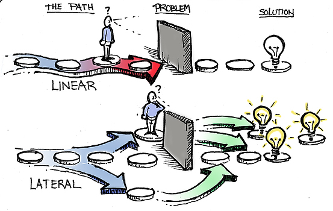
3.2.2.2.2 纵向思维 (时间)
纵向思维是一种历时性的思维方式。主要从事物自身出发，通过了解事物的过去和现在，发现事物在不同时期的特点和前后关系，抓住事物脉络。纵向思维被广泛应用于科学实践领域中，纵向思维通过分析和研究事物发展过程 (萌芽、成长、发展、消亡) 得出事物发展的规律性。
3.2.2.3 正向与逆向
3.2.2.3.1 正向思维
是按常规思路分析问题，遵循事物发展自然过程，以事物本身常见特征和一般趋势为标准的思维方式。是一种从已知到未知，从过去到未来以揭示事物本质的思维方式。正向思维时间轴与时间方向一致，随时间进行，符合事物发展的自然过程和人类认识的过程，能够发掘符合正太分布规律的新事物及其本质。面对生活中的常规问题，正向思维具有较高的效率和较好的处理效果。
3.2.2.3.2 逆向思维
与正向思维相反的创造性思维方法。在思考问题时跳出常规思维，“反其道而思之”，改变思考对象的空间排列顺序，是对司空见惯的或已成定论的观点或想法反过来的思维方式。如从A事物与B事物的联系，反推B事物与A事物的另外一种联系。逆向思维利用思维的可逆性，从反方向进行推断，并运用逻辑推理寻找新的解决方案。如为防止鱼粘锅，把热源由锅的下面安装到锅的上面。
3.2.2.4 直觉与灵感
3.2.2.4.1 直觉思维
直觉思维是指对问题未经深入分析，仅凭对少量本质现象的感知迅速对问题答案作出判断和猜想。对未来事物的结果有某种预感或预言也属于直觉思维。直觉思维本身是一种心理现象，可以通过有意识的训练加以培养。直觉思维和逻辑思维同等重要，"数学的全部力量在于直觉和严格性 (逻辑) 巧妙结合。"(伊思·斯图尔特)
3.2.2.4.2 灵感思维
灵感思维也称做顿悟，借助直觉启示快速迸发领悟或理解的思维形式。灵感思维是逻辑与非逻辑相统一的理性思维过程。从艺术角度来看，灵感思维是在艺术创作中，大脑皮层处于高度兴奋时的特殊心理状态和思维形式，它是在一定形象思维和抽象思维基础上突如其来的产生新概念或想法的顿悟式思维形式。
灵感的出现在时间和空间上不具确定性，但灵感产生所需条件却是相对确定的。灵感的产生有赖于长期知识积累和对问题的长时间分析和探索。
- 久思而至
- 梦中惊成
- 自由遐想
- 急中生智
- 另辟新径
- 原型启示
- 触类旁通
- 豁然开朗
- 见微知著
- 巧遇新迹
3.2.2.5 联想思维
联想思维是根据当前感知到的事物、现象或概念，想到与之相关的事物、现象或概念的思维活动。联想思维可快速将记忆中搜索出的信息进行分析、整理，并构造一种联系，但这种思维过程中没有固定的思维方向。联想思维可以开阔思路，加深对事物的认知。联想思维具有连续性、形象性和概括性等特征。
- 连续性
- 形象性
- 概括性
3.2.2.5.1 联想思维训练
The ability to connect previously unconnected ideas.
- Connect outside your network different from you
- Observe new environments with fresh eyes
- Question the unquestionable
- Experiment to see differently (disassemble a product to see the inner structure)
- Have the courage to act (thinking -> action)
- Repeat (to strengthen the skills)
3.3 创新设计方法
“授人以鱼，不如授人以渔”。创新设计方法是在人们长期实践基础上总结提出的，用于辅助进行设计创新活动的手段和策略，是有效的、成熟的创新方法的总结性表达。创新思维方法广义上讲，是指创新过程中所运用的一切思维方法，包括逻辑思维和非逻辑思维。狭义上讲，创新思维方法是指创新过程中产生新颖独特的思路和新设想时所运用的思维方法。创新设计方法不仅是概念设想时的思维活动，整个设计系统的流程都需要创新设计方法的创造性成果。
3.3.1 面向用户
3.3.1.1 一手研究
锁定目标人群，收集特征资料，用户访谈与问卷调研等。在一手研究中，生动的故事和细节描述都可成为有价值的参考，很可能成为解决问题的关键。在调研过程中要善于运用照片、视频或音频形式加以记录，以便为日后研究提供有价值的参考。
3.3.1.2 二手研究
对已公布的信息或出版物进行调查研究。如通过互联网进行大量资料收集。虽然这些信息不是亲自调查得来，但二手资料经过权威认可，参考价值显而易见。
3.3.1.3 用户特征描述
通过收集各种与用户相关的细节信息来帮助理解用户，并将其作为重要的设计来源和参考。具体操作：搜集与目标人群息息相关的生活物品，通过相关物品去理解和分析目标人群的行为特点和群体性特征。特征描述为了解目标个体行为、习惯和个性特点提供了有效的方法，是一种非常重要且必要的调研方法。
3.3.1.4 角色扮演
角色扮演是一种以表演的方式洞察概念的方法，能够引起设计师与用户之间身体和心理上的共鸣。
3.3.2 群体创新
3.3.2.1 头脑风暴法
由一组人员针对问题各抒己见、互相启发、自由讨论，从多角度寻求解决问题。
3.3.2.1.1 理论基础
- 联想反应。在集体讨论问题时，每提出一个新观念，都能引起他人联想，产生链锁反应；
- 热情感染。不受限的集体讨论问题能激发热情、互相感染、竞相发言，形成热潮，提出更多的新观念；
- 竞争意识。在有竞争意识的情况下，人的心理活动效率可增加50％或更多；
- 自由欲望。不受约束的讨论使个人的自由欲望得到满足，活跃人的思维，促使新观念脱颖而出。
3.3.2.1.2 具体实施
建两个小组，观念组（想组）和专家组（评价组）。观念组员最好由富有抽象能力和幻想能力、不同职业、不同文化水平、无隶属关系的人组成。专家组应由有分析和评价能力的人组成、各组人数以6一10人为宜，两组分别活动遵循以下原则：
- a. 推迟判断：观念组对问题展开讨论，之后专家组对提出的各种观念进行分析、评价、判断。观念不宜过早判断，以免扼杀新观念的产生；
- b. 自由联想：允许提出看似荒唐可笑的观点；
- c. 以量求质：提出的新观念越多，解决问题的可能性越多；
- d. 借题发挥：与会者可把他人观念加以综合提出自己的观念，也可发挥或改造他人观念。
3.3.2.2 视觉风暴法
在头脑风暴的过程中，通过各种简略草图来表现或阐释想法和概念，并记录和交流想法。将头脑风暴与视觉风暴结合会起到事半功倍的效果。在设计深化的过程中，早期概念发散往往起引导作用。而视觉风暴中迸发灵感的简略草图是概念深入的强大动力。在前期构思阶段，不必纠结于概念的细节和草图是否太过粗糙，太过严谨的草图可能会较低头脑风暴效率，不利于发挥想象力。
3.3.3 发散创新
把问题的某些方面突出强调出来，具有针对性的进行创造性活动，用于开阔思维、发散思维的创新方法，主要包括特性列举法、缺点列举法、希望点列举法和检核表法等。
3.3.3.1 特征列举法
从不同角度把事物分解为一系列特征，使问题简单化、具体化、易于发现和解决问题。一种化整为零的创意方法，通过将目标对象的特性分解，详细分析，找到解决问题的途径。通常分解越细致，着手解决的问题越小，越易成功。
3.3.3.1.1 特征 (名词特性、形容词特性、动词特性)
- 名词特征：事物的组成部分、材料、要素等；
- 形容词特征：事物的性质、颜色、状态等；
- 动词特征：事物的功能。
3.3.3.1.2 过程
列举现有事物的特征，发现需要改进的问题，提出新的创造设想。
- 选择需要改进的对象；
- 编制改进对象组成部分表；
- 编制改进对象组成部分的本质特征表；
- 改进需要改进的问题（特征），使改进对象臻于完善或面貌一新。
3.3.3.2 缺点列举法
用批判的眼光，抱着怀疑的态度去重新审视现有产品存在的缺点，可以从产品特性、结构、功能及使用方式等方面入手，从中找出缺点并寻求解决问题的方法。
理论基础：改进旧事物主要是改进旧事物的缺点，列举旧事物的缺点，发现存在的问题，找到解决目标。和特征列举法一样，从表述事物的名词、形容词和动词特征3方面来分析。
3.3.3.3 希望点列举法
从人们的意愿和希望出发，通过列举希望新的事物可能具有的属性来寻找新的发明目标。
3.3.3.4 检核表法
一种理性化的问题解决方法。用一张一览表对需要解决的问题进行逐条校核，以探求自己所需问题的解决方案。这种思考模式能从不同角度激发创造性的设想，有利于突破参与者的心理障碍，使思考问题的角度更加具体和明确。
3.3.3.4.1 泰勒检核表法
- 项目检核问题表法: 表中罗列一系列较为具体的问题和注意事项，给人指出一般解决问题的方向；
- 普通检核问题表法: 表中罗列一系列具有共性和普遍意义的问题，给人指出创造性解决问题的方向。
3.3.3.4.2 奥斯本检核表法
在研究大量科学发现、发明、创造事例及总结自己研究成果和实践经验的基础上编制而成。有75个激励思维活动的问题，按内容相似性可归纳为9组：
- 有无其它用途？
- 可否借助其它领域模型的启发？
- 可否扩大、附加增加？
- 可否缩小、去掉减少？
- 可否改变？
- 可否代替？
- 可否变换位置？
- 可否颠倒？
- 可否重组？
3.3.4 沿用设计
在成功产品启发下，沿用他人经验和成果展开设计。在我们生活周围，随处可见被沿用的设计（如新的风扇和自行车设计），可能与最初产品有较大变化，但这种变化经过逐步改进发展而来。
3.3.4.1 模仿设计
模仿是创造活动的初级阶段。通过模仿启发思维，提供方法，少走弯路，省时、省钱，迅速达到同等水平。但模仿不等于抄袭。现实中，独创产品或产品某部分往往受专利保护，但其经验、方法却可通过模仿学习来共享。模仿包括直接模仿或间接模仿，其实质是接受启发，通过模仿设计出不尽相同的产品。
仿生设计可看作模仿设计，受自然事物和生物中合理因素的启发，对其进行模仿。模仿内容包括生物的构造运动原理和形态。
3.3.4.1.1 直接模仿
模仿同一类产品。如：一款半高电风扇高度低于普通落地扇，高于台扇，既适于站着受风，又适于坐着受风，底盘控制键，既可用手也可用脚操作。这种具有广泛适应性的设计，深受用户青睐。模仿设计可从需求识别方面走出捷径。如从列举的产品中受到启发，设计出一系列符合人众生活的同类产品，甚至在此基础上更具创新性。
3.3.4.1.2 间接模仿
模仿不同类型的产品或事物。如：将常见的摩托避震设计用于自行车；将摄像机的变焦方式用于照相机。将其它产品的某些原理、形式、特点加以模仿，并在其基础上进行发挥、完善，设计出另外的不同功能或不同类型的产品。
3.3.4.2 移植设计
移植设计类同于模仿设计，但并非简单模仿。移植设计沿用已有技术，进行新的目的要求下的移植、创造。将某个学科、领域成功的科学原理、技术、方法等应用或渗透到其它学科、领域中，为解决某一问题提供启迪和帮助。
3.3.4.2.1 移植类型
- 纵向移植设计: 在不同类产品之间进行移植，类似于间接模仿。如将摩托车中心避震原理用于办公坐椅。
- 横向移植设计: 在同一类产品内的不同形态之间进行移植。如将助听器的形式用于音乐耳机的设计。
- 综合移植设计: 把多种类型的产品概念、原理及方法综合引进到同一研究领域或同一设计对象中。
- 技术移植设计: 在同一技术领域的不同研究对象或不同技术领域的各种研究对象之间进行的移植设计。
3.3.4.2.2 移植方式
- 原理移植
- 功能移植
- 结构移植
- 材料移植
- 工艺移植
3.3.4.3 替代设计
用某一事物替代另一事物的设计。
3.3.4.3.1 材料替代
一种材料被其它材料替代时，会对设计提出新的要求。如，原本用木材制成桌椅，出于节约天然材料的目的，用塑料替代，就须按塑料特性和工艺要求进行设计。以塑料替代木材也可提高量产能力及标准化等。
3.3.4.3.2 零部件替代
出于性能改良或工艺优化的目的，用其它产品的零部件或重新设计的零部件对原产品进行替换，使之在功能上更趋优化。
3.3.4.3.3 方法替代
用新方法代替旧方法，以达到既定功能或其它目标（如优化实现功能的过程）。
3.3.4.3.4 技术替代
用不同技术手段实现同样功能的产品，会产生不同的结果。用先进技术替代落后技术，提高产品品质，降低产品成本。技术替代会影响到设计，有时技术替代也是设计方法的替代。
3.3.4.4 标准化设计
参照行业先进合理的标准，利用其有价值的部分进行创新设计。行业标准经科学验证，具有相当合理性，也反映所采用技术的先进性和普遍性。采用标准化设计可降低成本、提高劳动生产率、扩大商品市场、拓展贸易及迅速将科技成果产业化。
3.3.4.5 专利应用设计
利用已有专利或过期专利对其进行改进，产生新的设计方案，形成新的设想甚至取得新的专利。
3.3.4.5.1 专利综合利用
许多产品所涉及的专利技术不止一项，只有对几种不同的专利资料加以利用，才有可能解决问题，实现创新设计。
3.3.4.5.2 从专利中寻找规律
众多的专利信息会显示许多成功因素，也会暴露失败因素。通过专利研究，发现发展的脉络，找到有效的创新方法。
3.3.4.6 集约化设计 (组合设计)
通过归纳和统筹，使多样性变为统一和有序。实际产品有可能是若干或同一产品的归并，也有可能是系列产品的归整、收纳。
组合法是将两种或两种以上原理、技术、概念、方法、产品的一部分或全部适当叠加和组合，形成新原理、新技术、新概念、新方法或新产品。正如碳原子以不同方式组成金刚石和石墨一样，产品经过不同形式的组合,也可形成新的产品。
3.3.4.6.1 相同产品的集约化设计
当一种产品在大量使用时，会遇到归整移动、调整和存放的问题。如公共座椅设计，座椅的移动和收纳是常有的事。好的公共座椅设计，无论在独立使用还是大量屯积时都是合理的。
3.3.4.6.2 系列产品的集约化设计
成套系列产品需要进行集约化设计的目的在于方便使用，方便移动，易于收纳，易于展示。具体手段如下：
- 通过设计，使系列产品本身具有集约功能。
- 通过中介物使产品集约化。如用包装使产品集约化或用构造物使零落的产品归纳在一起，变得简约。
3.3.4.6.3 非系列产品的集约化设计
通过媒介物的设计，将并不相关的各种产品汇集一处。这种类型的设计重点是针对承载体，而被集约的产品不一定要有集约化特征，如工具箱。
3.3.5 其他方法
3.3.5.1 黑箱方法
略去客体内部结构，只从输入与输出关系上，即输入某种因子会引起客体的某种行为而输出某种结果，来考察客体的功能和特性。"几种可供选择的结构被密封在盒子里面，研究它的唯一途径就是通过盒子的输入端和输出端。"(维纳《模型在科学中的作用》)
- 白箱：打开"箱盖"直接观察内部结构来说明"箱子"特性功能。
- 灰箱：利用输人输出结果不仅认识系统的功能和行为，且对系统内部结构和机制作一定的识别和判断。
- 黑箱：完全略去内部结构，仅根据输出、输入关系来把握系统功能。
3.3.5.1.1 黑箱方法步骤
- 将客体与其环境分开，确定黑箱；
- 考察黑箱特性，研究输入(试验因子)输出(黑箱的反应)关系。找到关系函数；
- 根据对输入、输出关系的分析，说明黑箱功能。
3.3.5.2 功能模拟法
不考察客体内部结构和质的特点，只考察客体功能行为特性，以功能行为的相似性为基础建立模型，来模仿和代替客体原形的功能和行为。
功能模拟法制造模型不是为了研究原型客体，而是用模型作为研究手段，制造模型本身就是目的，就是为了用模型来模拟和代替原型的工作。同时，功能模拟法模拟的只是客体的功能行为，不像一般模拟法，要求模型与原型之间的性质和结构及几何形状等完全相似。这样，功能模拟法就能把各种不同的物质过程联系起来，成为互相模拟的手段，从而大大扩展了模拟范围，且使模拟过程便于应用数学模型。
维纳应用功能模拟法，把人和动物特有的目的性行为賦予机器，创造了“控制论”学科。功能模拟法还为仿生学、计算机、人工智能及神经生理学、心理学、思维科学、社会学等提供了新的研究方法。
3.3.5.3 功能延伸法
产品在使用过程中，产生的新功能已超越其本身的功能。如，灯柱除了支撑路灯的作用还有固定旗帜、张贴广告或海报、停靠自行车等功能，而这些功能可能并非设计师最初意图。故细心观察生活，留心功能延伸，让思维发散。
3.3.5.4 技术关联分析预测法
投入产出法在技术预测中的应用。应用该法首先确定技术分析项目，其次明确项目中各要素之间的关联程度。一项技术是若干要素的集合体，如一个部件包括材料、制造技术、加工工艺等。步骤如下：
- 调查该项技术的组成要素；
- 弄清各技术要素之间的关联度；
- 以关联度与现状作比较预测今后的发展趋势。
3.3.5.5 焦点法
以要解决的问题为焦点对象，把3、4个偶然选到的对象的各种特征与焦点对象进行强制组合，从中引发新的观念，并通过自由联想把新观念具体化。该法基础是联想。基本过程如下：
- 确定焦点对象；
- 选择3、4个偶然对象；不同角度异质为佳，保证联想广度、观念新颖与解决问题的独创性。
- 编偶然对象特征表；
- 把偶然对象特征与焦点对象组合形成新观念；
- 通过自由联想把新观念具体化；
- 评价优选，确定最佳方案。
3.3.5.6 科学幻想法
使用有关逻辑和非线性感知方式，依靠未来学研究成果和创造性的想像力来捕捉现实世界的发展趋势。科学幻想把社会型式、行为方式和物质因素织成一幅图案、一个整体，把各种趋向和进程关联起来，描绘未来图景。科幻小说有些预见具有合理性和前瞻性，对科学发展有一定影响，一些科学预测可加以利用并实现。
3.3.5.7 KJ法(卡片排列法)
把搜集的大量素材（信息数据等）简洁地记在卡片上，再把这些卡片以某种基准（关系特征、性质等）进行调整、编组、结构化，使之产生新观念。过程如下：
- 制作卡片：每张卡片记录一个中心内容，要言简意賅；
- 编组：把卡片按类缘关系分类编组，题写类名（概括性小标题)，形成小组、中组和大组；
- 图解：把各组卡片按一定顺序排列，贴在一张大纸上，用各种关系符号联系起来，使之图解化；
- 文字表达：把各组之间的一定的相关性质联系起来，并用简要文字表达出来，得出最后结果。
3.3.5.8 类比启发法
3.3.5.8.1 类型
- 拟人类比 (挖土机或机器人的机械臂)
- 直接类比 (电视发射塔类比云杉圆锥形，提高抗风能力) (飞机发动机燃烧器内表面类比沙丘形状降低气体湍流紊乱现象)
- 象征类比 (齿轮象征工业)
- 幻想类比 (飞毯式载人飞行器)
3.3.5.8.2 过程
- 提出问题；
- 分析问题；
- 提出一些解决方案；
- 进行类比：围绕理想解决方案，同异质事物进行各种类比，提出各种模型；
- 选定模型：从各种模型中选出最佳模型；
- 分解模型：结合理想解决方案分解最佳模型，从中抽出与解决问题有关的主要因素：
- 结合：把有关因素与理想解决方案结合；
- 确定观点：选择一种可行观点，综合有关因素与理想解决方案，成为现实方案；
- 完成阶段：研究和解决技术性细节问题。
3.3.5.9 梦想法
- 尽量作出对人类有最大贡献的梦想 (结合自身兴趣)。
- 围绕梦想持续阅读有关书籍，研究和思考相关问题。
- 缩小梦想范围，使梦想成为现实。把梦想中暂不能实现的部分舍弃，使梦想现实化。
3.3.5.10 模型法
以某种程度的相似再现另一个系统，代替原物，从研究中得到被再现和被反映的系统（原物）的信息。这里“模型”并非实物模型，而是概念模型（如数学模型）。用模型模拟条件已知的原型，为了探索未知“原型”，在思维中设计一种在理论预见中能够成立的“模型”，再在实践中予以验证和修正，使其逐步提高与现实“原型”的一致性。博奕预测、计量经济学、系统动力学、灰色系统理论等所采用的预测方法也属于模型法范畴。
3.3.5.11 目标树法
借用树在生长过程中不断分枝的过程来表示事物发展的层次性与可能趋势。以一根节点作为出发点，一级一级分枝。各分枝点的边界值是一个用作比较的数，写在结节旁，至最后一结点，其边界值就是该方案的答案。
一项对地热资源的研究用此法概括了近70页报告内容，按相关度，分别反映在树的相应部位，既可看清各因素的相互关系和关键因素，又可预见各种可能发生的结果。相关树法可用来检验方案以及为方案提供的可能性进行整理。
3.3.5.12 NBS法(NHK智力激励法)
类似奥斯本智力激励法，但限定与会者提意见的数量，在较短时间（2-3小时）解决问题。程序如下：
- 主持人1名，与会者5一8人；
- 主持人在会前公布课题，发特制卡片，要求每人提出5条以上意见，每张卡片填写一条意见；
- 主持人召集会议，要求与会者把填好的卡片放在桌上，并依次做简单说明；
- 与会者在听他人发言时如有新想法，即写在卡片上，也放在桌上；
- 与会者依次说明完毕后把全部卡片摆开，由全体与会者用KJ法对内容相近的卡片分类、集中在一起，并写类名（概括性小标题）；
- 主持人同与会者对分类卡片提出补充想法；
- 主持人根据与会者的评价和讨论确定重要等级，最后形成解决问题的方案。
3.3.5.13 NM法
把感性知识用类比思维机制转化为理性知识，产生大量新观念。对具体事物形成的条件反射可看成“点的记忆”，用想像、类比等方法把平时积累的感性知识（点的记忆）转化为理性知识（线的记忆）产生大量新观念。程序如下：
- 主持人把课题写在卡片上，置于桌上，运用BS法把与会者提出的想法记在卡片上；
- 把与会者的卡片按各种逻辑关系横向排列；
- 以每张卡片的内容为议题用类比启发法讨论，把与会者用4种类比（直接、拟人、象征、幻想）得到的观念记在卡片上，并竖排在有关横排卡片下，将全部卡片类比完后，让与会者纵观全部卡片，找出观念之间的联系；
- 若找到联系或获得启发，就记在卡片上，排在卡片阵下端，然后再将纵列卡片用KJ法分类组合获得新观念，最后汇总即可形成现实解决方案。
3.3.5.14 偶然联想链法
从联想的新组合中获得启示，形成大量解决问题的新观念。该法以联想（相似联想、接近联想、对比联想、关系联想）、隐喻（相似隐喻、对立隐喻、疑谜隐喻）和概念（词）为基础，以要领作为联想和隐喻的手段。一个概念（词）平均有10个直接联想联系，经过4步联想，即可达到104数量级。
3.3.5.15 情景描述法
又称为“脚本法”，从现状出发，把将来发展的可能性用电影脚本的形式进行综合描述。以各种预测结果为前提，再把可能出现的偶然变化因素考虑进去，描绘出可能性较高的未来图景。
- 空间：不只描绘一种发展途径，而要把各种可能途径用彼此交替的形式进行描绘；
- 时间：所描述的不是未来某一时刻静止图像，而是动态发展图景。
3.3.5.16 趋势外推法
把已知量按时间顺序（如年月）排列构成一个序列，再利用过去的变化来推测今后的变化。适用于时间不太长的预测。注意以下几点：
a. 需有专门的原始数据和技术参数，根据分析过去的实际值，从中发现规律； b. 对过去由于不正常原因 (如地震) 所造成的数据变动应剔除不计； c. 进行经济预测时，要考虑运动的多变性，预测期不宜过长，一般不超过1－2年。
3.3.5.17 十进位探求矩阵法
有步骤地利用10种创造学技法与10项技术系统基本指标中的1项指标进行组合，形成10×10型矩阵，从中获取新的思路以探求新的解决方案。这些方法与指标形成10x10型矩阵，矩阵每一小格形成一个组合，但这种组合并不非现成技术方案，而是帮人们产生联想，探求新观念的一种形式。
- 10种创造方法
- 10项基本指标
3.3.5.17.1 10种创造方法
- 迁移：把某一技术系统的基本指标转用另一技术领域；
- 适应：把已知过程、结构、形式、材料应用到新的其体条件时，予以适应性改变；
- 倍增：增加基本指标；
- 分化：把基本指标分解，细化；
- 统合：把基本指标相加、联结，混合、统一等；
- 反向：使顺序相反、转向、颠倒等；
- 瞬变：把基本指标作瞬态变化；
- 动态化：使重量、温度、尺寸、颜色及其它指标在时间性上作动态变化；
- 类比：寻求和利用某技术系统与已知系统的指标在某些方面的相似；
- 理想化：使技术系统指标接近理想值。
3.3.5.17.2 10项基本指标
- 几何指标
- 物理和机械指标
- 能量指标
- 设计工艺指标
- 可靠性与寿命指标
- 使用指标
- 经济指标
- 标准化与统一化程度指标
- 使用方便与安全指标
- 美术设计指标
3.3.5.18 系统综合分析法
3.3.5.18.1 过程
| 过程 | 内容 |
|---|---|
| 系统综合 | 列出某课题的各种因素、知识和信息 |
| 将这些因素知识和信息编组，形成各种方案 | |
| 系统分析 | 对各种方案进行评价 |
| 根据评价结果选择一两个最理想的方案 |
3.3.5.18.2 例子（时钟）
| 项目 | 内容 |
|---|---|
| 时钟构成因素 | 时间轴：钟摆、发条、游、音叉、交流电的频率等因素 |
| 能源：干电池发条、交流电、允电池等因素 | |
| 传递机构：齿轮、滑轮、皮带、电子传递电路、磁路等因素 | |
| 指示装置：长短针旋转指示、水平刻度盘指示、数字指示等 | |
| 组合以上因素 | 形成各种方案 |
| 评价优选这些方案 | 不同课题有不同评价标准，可采用评分方式 |
| 根据市场情况、成本、研制难易程度、销售方式、制造技术、工艺、设备等标准评分 | |
| 最后得出各方案的综合分，从中优选一两种理想方案 |
3.3.5.19 形态分析法
把研究对象看成一个系统，把该系统分成若干结构或功能上特有的形态特征，并重新排列组合，产生新观念。理论基础：相关观念的联合越多，产生的新观念也越多。利用形态分析法可得出大量新观念。茨维基在二战期间利用该法不仅发现了当时德国人保密的火箭飞机，且发明了洲际直线流动空气喷气发动机、弹道装置、动力装置等。
3.3.5.20 基本原则
- 任何一种有限的概念都是不完全的；
- 知识是无限的；
- 任何领域都在探索整体知识；
- 要彻底解决问题必须对各种结构元素进行排列组合；
- 在各种不同事物之间都有某种共同关系存在；
- 先综合后分析，利于对事物客观分类；
- 先探求事物各种形态结构，后探求所需观念和答案。
3.3.5.21 过程
- 明确课题；
- 列出以解决问题的形态特征；
- 明确每个形态特征的可能变量，建立形态模式；(一般选3个形态特征，每个特征5一6个可变量，建立形态箱，形成100多个可能方案)
- 确定可能解决方案的功能价值；
- 选择最佳解决方案。
3.3.5.22 形象思维
用表象进行分析、综合、抽象概括。特点是以直观的知觉形象、记忆的表象或想象的表象为载体进行思维加工、变换、组合或表达。“作为思想元素的心理东西是一些记号和有一定明晰程度的意象，它们可以由我随意地再生和组合”（爱因斯坦）
按表象概括程度分为初级与高级形象思维
- 初级：幼儿时期形象思维主要依靠知觉，依赖具体事物形象或表象及其联想，表象概括程度较低；
- 高级：成人较多运用概括程度较高的一般表象或典型形象表达或把握某种思想、观念或理论。利用这种高级水平的形象思维也能反映事物本质。
3.3.5.23 专利情报和文献情报分析法
3.3.5.23.1 专利情报分析法
专利证书通常写明发明内容，即解决问题的各种新技术、方法新颖程度和在具体时间里得到的新结果等。专利情报分析法把某时间的创造发明当作技术发展的一个里程碑。对某种具体技术发展状况的分析，可用该技术在一定时期中取得的专利数来进行。根据专利资料进行预测分两步：
- 分析一定时期内公布的专利数，弄清专利动向，作出定性分析；
- 定量评价不同专利，进行比较，预测技术发展方向。
专利情报分析法可用于预测现有技术是在发展还是衰退？新技术何时能实际应用？技术转移的影响，以新技术为基础的工业化发展规模，可能出现的新技术等。
3.3.5.23.2 文献情报分析法
为评价当代科学发展水平，预测科技发展趋势，须对科学状况进行综合分析研究。应用文献情报分析法通过科学计量分析世界科技文献流的状况，并作定性分析解释。研究法主要有以下3类：
- 目录计量分析：指对某一类一次文献流作出定量分析；
- 引证分析：分为文献引证统计和引证网络分析；
- 词汇分析：用于严密跟踪各种变动中的索引，尤其自动化系统数据库中的词汇信息(频率词典)
3.4 思考题
充分利用本章提供的创新设计方法进行新产品的多方案构思和设计优选及结果分析。
- 创新设计方法可采用一种或若干种，并在方案和结果分析中说明。
- 构思至少３个方案，配草图和文字说明。
- 优选方案须绘制三视图和局部详细图示，并作标注和说明。
- 3月24日(周日)23:00前发送到anhongz@outlook.com
- 文件名：学号姓名作业四标题
- 文件类型：Word或PDF文档
4 产品系统设计流程
- 前期准备
- 产品企划和概念确定
- 造型设计
- 设计定案
- 设计与生产转化
- 进入市场
- 信息反馈
4.1 前期准备
- 经营方针
- 开发体制
4.1.1 经营方针
苹果公司: “简约、细节、关注环境”
4.1.2 开发体制
企业内部和外部专家之间的协同
4.1.2.1 项目组构成及分工 (设计开发计划书)
| 项目部门 | 项目分工 | 期限 |
|---|---|---|
| 项目管理 | 项目组构成 | 3个月 |
| 开发范围和开发内容研讨 | ||
| 开发进度 | ||
| 企划概念 | 市场调查的范围和调查项目研讨 | 3个月 |
| 市场调查的实施和分析 | ||
| 调查评价和产品范围、用户目标 | ||
| 商品企划确立设计概念 | ||
| 造型设计 | 产品使用环境和使用状态分析 | 3个月 |
| 产品系统构成形式分析 | ||
| 产品机构和功能研究 | ||
| 展开设计（构思草图概念模型） | ||
| 设计评价（效果图，外观模型） | ||
| 样机制作和综合评价 | ||
| 工艺设计与投产 | 工艺设计 | 3个月 |
| 量产化、生产技术研讨 | ||
| OEM选择 | ||
| 产品化 | ||
| 促销 | 制定促销计划 | 3个月 |
| 建立分销点和分销谈判 | ||
| 样本广告制作 | ||
| 论证会和研讨会 |
4.1.2.2 项目设计开发流程图
| 步骤 | 内容 |
|---|---|
| 设计准备 | 企业提出设计要求 / 设计师制定设计计划 |
| 市场调研 | 市场调研的目的 / 内容 / 方法 |
| 设计定位 | |
| 创意草图 | 构思草图 / 设计草图 |
| 设计效果图 | 手绘效果图 / 电脑效果图 / 计算机辅助设计 |
| 结构设计 | 造型结构设计 / 工程图绘制 |
| 模型制作 | |
| 生产 | |
| 销售 |
4.1.2.3 H产品开发设计流程
| 部门人员 | 步骤 |
|---|---|
| 公司内部人员(设计师/用户代表/医学专家) | 项目讨论 |
| 市场调查方法研讨 | |
| 市场调查方法实施 | |
| 市场分析 | |
| 产品概念研讨 | |
| 产品范围设定 | |
| 产品企划结果总结 | |
| 设计事务所/由技术部门 | 设计概念研讨 |
| 设计概念设定 | |
| 设计展开 | |
| 生产厂家 | 设计定案 |
| 工艺设计 | |
| 促销 |
4.2 产品企划和概念确定
- 企划简介
- 市埸调查
- 产品构思与定位
- 产品概念和企划
- 设计概念
- 产品企划定案
4.2.1 企划简介
4.2.1.1 企划定义
- 基于企业经营方针的市场开发活动
- 目的: 使产品及其构成要素顺应市场需求趋势，获得经济效益及提升企业实力
- 产品企划和市场调查密不可分
4.2.1.2 企划内容
新产品开发 (从产生到报废全过程的处理及策划)
- 核心产品企划
- 形式产品策划
- 延伸产品策划
4.2.1.3 企划类型
- 旧产品改良
- 剔除旧产品
- 产品用途创新
- 新产品开发
4.2.1.3.1 旧产品改良
- 改变产品功能
- 改变产品品质
- 改变产品式样
- 改变社会生态
4.2.1.3.2 剔除旧产品
- 功能性陈旧（技术革新）
- 延迟性陈旧（一定存货及旧需求）
- 实体性陈旧（达到使用寿命）
- 流行性陈旧（追求潮流）
销售不畅、盈利降低
4.2.1.3.3 产品用途创新
开拓旧产品新用途
4.2.1.3.4 新产品开发
4.2.1.4 企划推进
| 目的 | 过程 | 方法 |
|---|---|---|
| 产品战略 | ||
| 确立开发方针 | 项目 | 集体创造性思考 |
| 认定产品要素 | 市场调查 | 民意测验 |
| 认定市场倾向 | 市场细分 | 概念图分析 |
| 设定开发范围 | 产品定位 | 基于概念图 |
| 开发方式定位 | 产品企划、确定概念 | 5W2H |
| 商品化评价 | 向各部门提出计划书 | 书面形式 |
| 确定产品形象 | 设计概念 | 研究消费趋势 |
4.2.2 市埸调查与分析
出发点：发现重要需求，找到商品化途径
4.2.2.1 市埸调查目标
- 探索产品化的可能性
- 分析调研结果，发现潜在需求
- 形成产品具体而貌
- 发现开发中的实际问题
- 把握相关产品的市场倾向
- 寻求与同类产品的差异，树立本企业特有产品形象
- 寻求商品化的方向和途径
4.2.2.2 市埸调查内容
- 宏观市场环境：政治、法律、经济、人口、社会文化和技术环境
- 市场需求：需求量、结构和时间
- 消费者：人口构成、家庭、职业、教育、收入、购买心理、购买行为
- 企业自身：产品、销售渠道、促销、售后服务
- 竞争对手：数量、经营规模、人员组成、产品盈利能力、供货与销售渠道、促销方式、价格策略、生产能力、商场占有、销量及地区
4.2.2.3 市埸调查协作
收集大量产品样品和样本，了解竟争对手产品动向。
- 市场人员: 把握市埸趋势
- 技术人员: 反映市场动向的技术层面 / 建立企业内部技术情报 / 提供技术开发方向
- 设计人员: 发挥创新作用
4.2.2.4 市埸调查任务
- 探测消费倾向
- 探测产品需求 (产品形象)
- 探测市场倾向
- 形成概念框架 (头脑风暴)
4.2.2.4.1 探测消费倾向
- 品牌趋向: 汽车、音响、手表、服装
- 健康趋向: 健美、锻炼、美容
- 自然趋向: 向往大自然 (反朴归真)、自然装饰物
- 休闲趋向: 观光、旅游、桑拿浴
- 娱乐趋向: 卡拉OK、保龄球
- 消费者: 业余兴趣
- 个性化趋向: 家电彩色化、产品求异、装饰产品
追求健康: 简明 / 自然 / 休闲
4.2.2.4.2 探测产品需求（产品形象）
询问消费者对该产品形象期待如何 (明确设计意图)
| 设定范围 | 提供关键词选择 | |
|---|---|---|
| 轻松/愉悦 | 清爽/新鲜/娇嫩/愉快/寂静/沉着/轻快有趣/丰满悠然/温暖/亲切/柔和 | 可配图 |
4.2.2.4.3 探测市场倾向
- 收集产品样本，按功能和用途分类
- 反义关键词四象限分类 (离中心越远，属性越明确)
- 主动 (健身器械) — 被动 (按摩器、音响)
- 有需求而无产品的区域是潜力市场
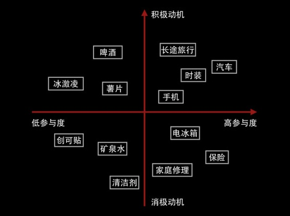
4.2.2.4.4 形成概念框架 (头脑风暴)
关键词描述 – 研讨 – 筛选
- 不轻易作优劣评价 (反对意见后续提出)
- 提倡自由松弛的思考 (思想越活跃越好)
- 追求数量 (提高好方案产生几率)
- 欢迎借鉴、完善他人想法 (相互激发)
- 逐步将零散思路联系起来
4.2.3 产品构思与定位
4.2.3.1 产品构思
罗列调查信息，集体讨论 (暂不顾及可行性，尽量提出各种构思)
- 有太空舱的感觉
- 便于睡眠
- 可调角度便坐姿和睡姿
- 使用者自行作各种调节
- 服务人员或医生可进行遥控
- 自动冲淋
- 可根据医疗保健要求方便更换药水
- 设置立体音响
- 配给使用者一次性浴衣
4.2.3.2 产品评价
- 借助概念分析图判断各种设想，找出构思产品所处市场位置
- 与相同位置产品比较是否强势，是否有望扩大市场及技术可行性
- 通过评价，产品开发方向趋于定位，如切入空白市场
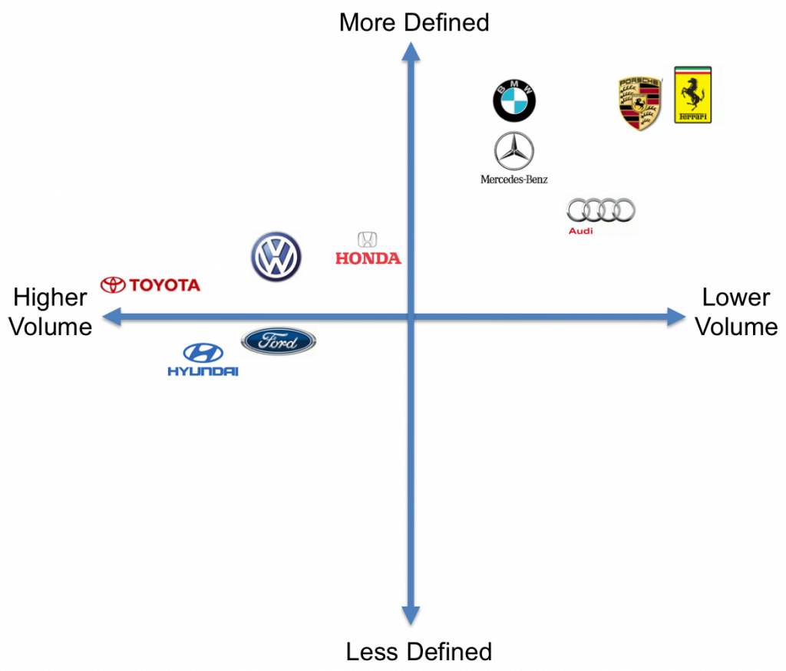
4.2.3.3 产品定位
4.2.3.3.1 产品定位原则
- 创新原则：新产品、新技术、新服务
- 特色原则：产品个性与品牌差异化
- 主导原则：领军产品（竞争力）
- 补缺原则：填补市场空白
4.2.3.3.2 产品定位方法
- 产品差异定位法
- 主要属性(利益)定位法
- 产品使用者定位法(明确目标用户)
- 使用定位法(消费者使用习惯)
- 分类定位法(与同类产品竞争)
4.2.4 产品概念和企划
4.2.4.1 产品概念
- 对新产品用途、功能、性能、形状等作出的具体构想。
- SOLO壁挂式多功能洗衣机颠覆传统洗衣机，紫外线消毒，衣物熨烫一体化。
- 针对特定需求，据企业所处环境 (社会状况、市场动向) 找到亮点，赋产品以个性。
4.2.4.2 企划
对产品概念、生产方式、产量、流通途径，商品化等条件作出决定。
4.2.5 设计概念
基于特定使用对象或意义，将使用方法、机构、形式、色彩等具体化。
- 中药汽疗设施
- 丰田汽车
- 其它案例
4.2.5.1 中药汽疗设施
4.2.5.1.1 功能定位
| 使用环境 | 使用体验 |
|---|---|
| 医院 | 医疗设施的可靠、理性 |
| 休闲康乐中心 | 休闲设施的自得其乐之感 |
4.2.5.1.2 形式定位
(根据市埸调查-关键词指认和照片选择)
| 概念 | 形式 | 联想 |
|---|---|---|
| 舒适/愉悦 | 饱满、温和、清爽 | 熊猫/企鹅、明亮的室内陈设/豪华轿车、健康柔美的体型 |
4.2.5.2 丰田汽车
追求高度的功能性和温馨典雅的乘车体验
| 功能性 | 宜人性 |
|---|---|
| 优良的空气动力性能 | 样式典雅 |
| 低燃料 | 高性能 |
| 轻量化 | 超静声 |
4.2.5.2.1 外装设计概念
- 车身体现空气动力学
- 高速不失操纵性能
4.2.5.2.2 内装设计概念
| 优异的人体工学 | 豪华大方的室内设计 |
|---|---|
| 1:1的驾驶台模型，仪表和操纵钮的位置符合人体工学要求 |
4.2.5.3 其它案例
| 厂家 | 商品名 | 概念 | 概念出处 |
|---|---|---|---|
| 三菱汽车(米尼加) | 微型车 | 安全、舒适、可选择性 | 袖珍照相机 |
| 日立制作所 | 个人FAX | 在个人桌面使用方便的FAX | 青年董事 |
| NTT | 流行的粉红色电话 | 公用投币的流行电话 | 杂货店、俱乐部、美容室 |
| M | 电池式装订机 | 突破电动式装订机的粗笨 | 产品市场 |
| 索尼 | 8mm一体化摄录机 | 可收纳、便携 | 画的感觉 |
| 松下电器 | 音响 | 形靓音美 | 小提琴 |
| 三菱电机 | 软垫干燥器 | 发香、装饰 | 春的时尚 |
| 尼康 | 观鸟望远镜 | 水鸟形象 | 观察鸟 |
4.2.6 产品企划定案
- 产品形式 (5W2H)
- 中药汽疗设备形象定位
- 产品企划书
- 产品企划评价
4.2.6.1 产品形式 (5W2H)
5W2H设定产品化条件，锁定具体产品形象
谁(WHO)在什么场所(WHERE)，何时(WHEN)为何(WHY)，干什么(WHAT)，如何使用(HOW)，以什么价格(HOWMUCH)购入。
| 项目 | 内容 |
|---|---|
| WHAT | 是什么？目的？做什么工作？ |
| HOW | 怎么做？如何提高效率？如何实施？方法怎样？ |
| WHY | 为什么？为什么要这么做？理由何在？原因是什么？为什么是这样的结果？ |
| WHEN | 何时？什么时间完成？什么时机最适宜？ |
| WHERE | 何处？在哪里做？从哪里入手？ |
| WHO | 谁？由谁来承担？谁来完成？谁负责？ |
| HOWMUCH | 多少？做到什么程度？数量如何？质量水平如何？费用支出如何？ |
4.2.6.2 中药汽疗设备形象定位
追求身心关怀(WHY)
的商务人员(WHO)
可以在下班或体息时(WHEN)
轻松(HOW)使用保健设施
产品价格为1万元左右(HOW MUCH)
4.2.6.3 产品企划书(1)
| 产品创意 | 可行性评价 | 产品开发设计 | 产品营销设计 | 产品利益目标 |
|---|---|---|---|---|
| 创意来源 | 技术性评价 | 功能设计 | 营销目标确定 | 投入 |
| 创意方法 | 市场性评价 | 结构设计 | 目标市场选择 | 产出 |
| 创意前提 | 企业性评价 | 包装设计 | 产品价格制定 | 风险度 |
| 创意筛选 | 品牌设计 | 销售渠道选择 | 社会效益 | |
| 促销措施选择 | 企业形象 | |||
| 服务设计 | 营销组织与人员 |
4.2.6.4 产品企划书(2)
- 企划部将产品化概要整理成企划书，征得经营、设计、制造、营销等部门认可
- 由设计部完成方案，送各部门评价
| 项目 | 类别 | 内容 |
|---|---|---|
| 产品概要 | 产品概念 | 使用目的 (用途 / 使用场所 / 产品目标) |
| 设计概念 | 产品形象 / 使用方式 | |
| 形式 | 材质 / 形状 / 实现功能 | |
| 产量 | 月产量 / 年产量 | |
| 预想价格 | ||
| 交付期 | ||
| 模具费 | ||
| 市场调查 | 市场信息 | 动向 / 需求 |
| 产品化效果 | ||
| 与竞争厂家关系 | ||
| 营销者/分销商的希望 | ||
| 生产管理 | 信赖感 | |
| 法规性 | ||
| 生产性 | ||
| 开发进度 | ||
| 开发预算 |
4.2.6.5 产品企划评价
为产品化的实现、设计向生产转化及产品市场化等阶段打下基础
| 评价对象 | 评价要素 | 内容 |
|---|---|---|
| 市场 | 成长性 | 需求的持续性 |
| 竞争性 | 有无竞争对手 | |
| 持续性 | 产品周期和需求量 | |
| 必要性 | 有无产品需求 | |
| 技术 | 难易程度 | 技术难易度 |
| 开发时间 | 开发完成期 | |
| 开发经费 | 研究开发经费 | |
| 相关技术 | 与相关技术、相关商品的关系 | |
| 生产 | 难易程度 | 生产难易度 |
| 部件材料比 | 关系产品价格的部件材料比率 | |
| 设备费 | 生产设备费 | |
| 流通 | 难易程度 | 销售时的难易程序 |
| 销售途径 | 原有途径还是新途径 | |
| 销售费用 | 销售所需经费 |
4.3 造型设计
- 造型设计概要
- 造型设计推进方式
- 造型研究
- 色彩研究
- 造型设计与人体工学
4.3.1 造型设计概要
通过产品造型构思 (草图) 完成预想图和概念模型，逐步将产品形象具体化。
- 人机要素：产品顺手、易用、可操作性
- 制造要素：工艺师和工程师配合设计师评价和校验造型参数
- 市场要素：畅销商品的造型特征
- 流行要素：流行色
4.3.2 造型设计推进方式
| 目的 | 开发过程 | 方法 |
|---|---|---|
| 设定产品形象 | 设计概念 | 根据企划确定 |
| 造型设计 | 构思草图 | 独立构思、集体研讨 |
| 造型研讨 | 概念模型（草模） | 纸质模型、发光塑料模型 |
| 设计定案 | 完成预想图 | 各种效果图 |
| 反映实际质感色彩的预想模型 | 设计评价模型１ | 发泡塑料模型、塑料模型、油泥模型 |
| 制造方法、装配方法和成本预算 | 设计评价模型２（样机） | 三维打印 |
| 模具 | ||
| 试产 | 量产化试制 | 各种实际成型方式打样 |
| 产品 | 量产 | 各种成型方式 |
4.3.3 造型研究
4.3.3.1 概念和造型
- 可收集各种能反映消费趋势的信息进行倾向探测 (杂志影像资料)
- 造型构想方式多样 (尼康观察水鸟的望远镜，采用水鸟形象)
4.3.3.2 功能构造与造型
- 产品功能构造直接影响产品造型，有时为新的造型需改变功能和结构
- 不能无视生产方法、材质和成本，而一味强调造型
- 好的产品功能和造型设计需降低成本并适于量产
4.3.4 色彩研究
色彩可改变造型感觉及形成不同心理感受
| 对象 | 内容 | 其它 |
|---|---|---|
| 产品概念 | "何人"、"何地"、"如何" 使用原则 | |
| 产品属性 | 照相机以黑灰为主；复印机和医疗产品多用浅白灰 | 如要超出习惯用色范围，须研究与外观色彩及市场战略意图是否相符 |
| 品牌差异 | 在惯用色基础上强调品牌用色，形成品牌系列 | 某一部分用企业色来装饰 |
| 信息提示 | 须依据人体工学原理 | |
| 表面处理 | 同样是黑色，因表面处理不同而视觉效果各异，如高光、亚光或橘皮质感 | 也可通过氧化处理形成肌理感 |
4.3.5 造型设计与人体工学
4.3.5.1 易用
- 操作困难的产品会影响产品功能发挥。
- 考虑人的动作和视觉特性，从心理、知觉、物理上求得产品与人之的匹配。
- 手柄、把手、旋钮
4.3.5.2 易懂
- 让认知联系自然对应
- 如：搭载微电脑的天平，操作显示要明确易懂，能轻易辨别微量变化。
- 操作显示、操作用语
4.3.5.3 以人为本 (D.A-罗曼《为谁而设计》)
电子芯片控制可简化操作，但也使过程黑箱化，如因选择复杂造成麻烦或误操作。
- 让使用者简单、明确地知道他可以怎么做
- 对象物要醒目
- 在操作过程中，通过视觉便可知道产品功能
- 要很容易地对系统现在的状态作出评价
4.4 设计定案
- 评价方法
- 评价过程
- 评价模型
- 商品化
4.4.1 评价方法
- 判断设计是否符合企划要求及是否与设计概念一致
4.4.1.1 经验性评价
- 在方案不多，问题不太复杂的情况下，评价者根据经验作出评价
- 比如淘汰法
4.4.1.2 数学分析评价
- 通过定量分析达到评价目的
- 如评分法、模糊评价法等
4.4.1.3 试验评价
- 通过模拟试验对设计方案进行更加准确的评价
- 如通过眼动仪试验的分析记录来判断引起消费者注意的特定区域是否明确
4.4.1.4 面向应用领域的设计评价
对设计方案作出可行性分析
4.4.2 评价过程
4.4.2.1 商业评价
以此建立营销计划作为销售起点
- 是否符合市场需求
- 对市场和消费者的诉求是否有效
- 与竞争对手产品是否形成差别
- 是否强化了企业形象
4.4.2.2 技术评价
产品设计直接影响生产和成本
- 设计方案对产品功能和构造产生了多大程度的影响
- 功能和构造在技术上是否能够解决
- 有无制造上的问题
- 制造成本
4.4.3 评价模型
- 用于操作使用和感觉(触感、质感)测试
- 机构、构造和后续生产等问题的分析评测
4.4.3.1 概念模型
- 设计师展开构想时制作反映设计形象
- 概念模型 (草模) 常用纸质、聚氨脂、聚醚发泡塑料等易于加工制作。
4.4.3.2 展示模型
- 定案后的内部展示
- 设计评价呈阶段性，当对多个方案进行优选时，可制作更好的评价模型，如采用料黏土、木材、石膏，及3D打印模型。
4.4.4 商品化
在设计评价基础上，进行商品化作业研究
- 产品名称、标志、识别系统及促销环节
- 产品样本和展示
4.5 设计与生产转化
根据已定方案进行工艺设计和原型制作，寻求合适的制造、组装和表面处理方法，明确需变更的部分。
4.5.1 工程设计
4.5.1.1 材料与加工工艺
- 材料是实现产品功能的物质基础
- 材料影响形态和肌理
4.5.1.1.1 手机设计的材料应用
- 塑料亚光喷漆：柔和、稳重
- 拉丝金属：现代感和科技感
4.5.1.2 装配设计
- 功能合并减少零件数目
- 将多个相关功能零件模块化成为一个装配件
- 用不同颜色区分外观相似的零件
- 避免密闭空间装配
- 新零件装配应自上而下
4.5.2 结构设计
结构紧凑、外形美观、安全耐用、易于制造
4.5.2.1 模块化设计
- 对一定范围内的不同功能或相同功能不同性能、不同规格的产品进行功能分析，划分并设计出一些列功能模块，通过模块选择和组合构成不同产品
4.5.2.1.1 模块化设计优势
不必全新设计，通过不同模块的不同组合开发新产品
- 减少专用件数量
- 降低生产成本
4.5.2.2 标准化设计
- 零部件结构使用标准规范
- 结构尺寸使用标准模数或系列数值
4.5.2.2.1 标准化设计优势
- 降低设计与制造成本
- 提高效率和效益
4.5.2.3 可拆卸设计
目的：针对回收利用和产品维修来减少资源浪费及废旧产品对环境的污染
- 可拆卸程度：废旧零部件易于回收并分类处理，及避免拆卸损伤
- 拆卸效率：拆卸过程简单、快捷、省时、省力
- 环保：减少有害有毒材料使用
- 经济：以最低的拆卸成本获得最大的经济收益
4.5.3 模型制作
4.5.3.1 目的与应用
- 利用工作模型和生产模型对产品进行模拟验证，明确把握构造和功能上的问题
- 检验设计方案合理性，修改完善方案，为制作产品样机和投入试生产提供依据
- 外部形态与内部结构相适应，测试强度、刚度、抗疲劳度、寿命、振动和噪声等
4.5.3.2 制作工艺
4.5.3.2.1 模型选材与工艺
- 锻造、压力加工、切削、冲压
- 使毛坯趋于成品：精密铸造、精密锻造、冲压、挤压、鐓锻、压制成形和粉末冶金
注塑成型、挤出成型、压制成型、浇注、中空吹塑
真空技术、离子氮化、镀渗工艺
电火花、电解、激光、电子束、超声加工
4.5.3.2.2 真空精密注型法
- 用木材、金属或树脂制作阳模（凸模），再用硅质翻制阴模（凹模）
- 在真空状态下树脂流入硅模，脱泡制成模型
- 此类模型是生产转化时的验收模型，用于结构检证，如校验复杂曲面和复杂形状
- 外观复杂的产品，有时要分解成若个部件分别进行模具设计
4.5.3.2.3 汽车模型制作案例
- 车身曲面多，须做原大模型，利于造型研究、生产技术检验和制图检查
- 从模型上读取数据，用于CAD设计或钢板压铸模具的加工
- 将实物模型制作与产品结构设计一起进行使最终方案更具可行性
4.5.4 生产规模
4.5.4.1 大批量生产
注塑成型或铸模成型的制造工艺适合忠实再现构成微妙曲线的、具有柔和感的设计形象。模貝费用昂贵，但能从量产中得到回报。
4.5.4.2 小批量生产
采用真空成型、钣金、精密铸造等工艺。
4.5.5 生产技术
4.5.5.1 重视相关技术的作用
4.5.5.1.1 技术发展
- CAD/CAM的普及使生产时间和成本大幅降低
- 柔性生产使多品种、小批量生产方式成为现实
4.5.5.1.2 技术应用
成形技术和面处理技术是产品质感表现的关键
气压成型、真空成型和金属压铸成型等已达到低成本、高精度，即使与用钢模进行量产化注塑成型和压铸成型工艺相比也不逊色。
4.5.5.1.3 H产品
壳体由外壳和内壳复合而成，内外壳之间形成的夹层空隙正好隐藏各种管线。
起初内外壳体均由玻璃纤维增强塑料（玻璃钢）成型，一定量产后，改用真空成型
- 降低成本
- 柔性化特点，即产量对生产成本不会有太大影响，可按定货情况及时生产，也可根据客户要求，改动某些部分，扩大产品适应面。
在控制机身角度的技术上，因为液压传动成本太高，且存在使用寿命和维修服务问题，故采用电动柜传动，并对其进行了降噪处理。
4.5.5.2 气压成型技术
有效的外观成型技术
4.5.5.2.1 壳体造型用材料
铁、铝、塑料、橡胶等
- 铁通过钣金工艺铸型
- 铝通过铸铝成型
- 塑料通过注塑、真空及气压成型
4.5.5.2.2 金属外壳相比塑料的优势
- 对电磁波具有屏蔽作用。
- 刚性好。
- 尺寸精度高。
- 阻燃
4.5.5.2.3 气压成型技术优势
生产资料类产品 (医疗产品、理化学产品、工程产品等)，一般是小批量订货生产，钣金、铸造、焊接的加工方法居多，而导入大规模生产设备的成型及冲压加工方法有困难，存在成本问题。气压成型和真空成型可解决此问题。
- 对改良的塑料的加工性能与注塑成型己无差别，并可用于金属板材，通过加热加压的方法成型（金属气压成型）。
- 气压成型能与注塑成型一样自由表现曲面特征线及加强筋，包括球面成型。
- 在成本方面也只有压铸成型和注塑成型的1/3~1/10。
- 在原成本上因钢模使用较钣金为高，但运作成本较低。一般在500一1000产量的产品采用该工艺较为合适。
4.6 进入市场
4.6.1 产品生命周期营销策略
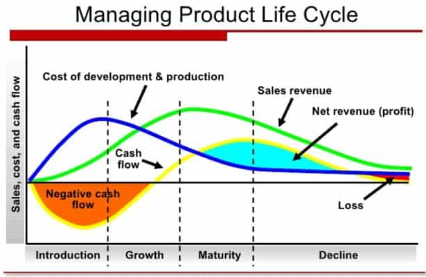
4.6.1.1 导入期
- 高价格
- 低促销
- 广宣传
4.6.1.2 成长期
- 提高产品质量和性能
- 开拓新市场，开发新功能
- 树立产品形象
- 增强销售渠道
- 选择适当降价时机(节假日)以吸引消费者，提高竞争力
4.6.1.3 成熟期
- 产品改良：改良性能、品质和款式以保持老用户，吸引新顾客
- 市场再开发：寻求新的细分市场(从城市到农村)
- 营销策略重组：价格、分销、促销(有奖销售)
4.6.1.4 衰退期
- 减少产量或停止生产
- 转向新产品开发与推广
4.6.2 促销与产品形象推广
4.6.2.1 促销目的
通过开拓流通渠道，完成向消费者正确传达产品概念和企业理念，提升产品价值，构筑产品形象。
4.6.2.2 产品形象推广
包装样本、广告、展示会
- 在广告方面，通过优质、震撼人心的画面，和差别化、个性化的诉求打开市场。
- 有些产品自身就能成为很好的表现媒介，如法拉利跑车。
4.6.2.3 广告诉求
4.6.2.3.1 导入期
- 告知产品功能
- 选择最佳利益点(符合需求和创造新需求)
4.6.2.3.2 成长期
- 品牌扩张，丰富内涵，提升品牌认知度
- 竞争企业增多，需塑造品牌形象，加入感性因素(色彩随心换)
4.6.2.3.3 成熟期
- 强化品牌形象(提示广告)和差异化(品牌个性)
- 并衍生新的产品概念
4.6.2.3.4 衰退期
- 唤醒人们对品牌的怀旧意识
- 并诉求给消费者带来实惠
- 同时推广新产品
4.6.3 产品商品化及其软价值
4.6.3.1 产品商品化
服务业帮助快速实现产品的商品化
4.6.3.1.1 产品测试评价服务
配置大量现代知识测试要素和可靠保障
4.6.3.1.2 知识产权运作服务
为产品的商品化实现的新进性和有效性提供法律支持和保护
4.6.3.1.3 市场需求信息服务
为企业时刻关注消费需求，获取第一手市场信息资料，使企业持续开发市场所需新产品，建立先发优势
4.6.3.2 产品"软"价值
同样功能、同样制造成本的产品由于服务和企业文化差异可能使售价相差几倍。
- 材料成本、人工费用、设备折旧和运输费用等"硬"价值
- 技术新颖性、实用性、优良设计、售后服务及产品文化等"软"价值
4.7 信息反馈
产品在投放市场后，需收集用户反馈信息。通过对反馈信息的分析可以有效地进行产品的改良以及加强用户与产品之间的沟通。
- 建立完善的反馈机制
- 制定规范的产品信息反馈表
- 加强和完善售后服务
4.8 思考题
选择一个具体的产品设计案例对其进行产品系统设计流程分析。
- 所选案例要有典型性，能完整体现系统设计流程
- 重点分析案例产品概念和设计概念的产生过程
- 分析市场调研内容，完成新的调查报告，提出新的产品设计概念 (配草图)
- 3月31日(周日)23:00前发送到anhongz@outlook.com
- 文件名：学号姓名作业五标题
- 文件类型：Word或PDF文档
5 产品系统设计案例
5.1 概述
5.1.1 制定系统设计方案依据
- 用户需求及未来市场前景
- 开发产品当前和未来经济效益
- 技术实现和实现成本
5.1.2 商业设计要点
- 新产品开发
- 现状分析
- 未来预期
5.1.2.1 新产品开发
- 综合产品特性、开发时间和资金配置等提出产品系统设计策略；
- 通过市场分析来细分市场，找出合理的市场定位。
5.1.2.1.1 设计策略实现的途径
- 设计新产品，开拓新市场；技术突破，进行产品再开发与研制，开辟新市场；或开拓性地运用现有技术；
- 比竞争对手更支持现有市场的需要；
- 掌握消费者脉动与需求；
- 一旦决定了设计策略方针，即意味同时决定产品差异化特质、产品开发方向、设计经济成本、设计组织架构等。
5.1.2.2 现状分析
- 对现有产品进行分析
- 研究竞争对手的设计策略
5.1.2.3 未来预期
- 把握社会发展趋势和流行趋势
- 提出具有竞争力和良好商业前景的设计方向
5.1.3 设计案例
5.1.3.1 Baby Care 婴儿监护器
5.1.3.1.1 设计项目
- 项目名称：Baby Care婴儿监护器系统设计
- 项目简介：在现有婴儿监护产品中找到空白市场， 用arduino开发产品原型，并进行外观设计。
- 团队成员：于康康、崔宴宾、 晨菌、赵婉茹
- 周期：48天
5.1.3.1.2 设计流程
- 在现有婴儿监护产品中寻找设计机会；
- 运用Arduino编程和硬件进行原型开发；
- 产品外观设计；
- App高保真原型设计。
5.1.3.2 帝度微波炉
5.1.3.2.1 设计项目
- 项目名称：帝度微波炉系统设计
- 项目简介：由微波炉调研找出产品功能、市场份额、趋势和用户特征等，发现设计机会，并进行外观设计和模型制作。
- 团队成员：何宇晴、何志成、姜然、曲明超、王佳琳
5.1.3.2.2 设计流程
- 调研 (产品、市场和用户调研，找出现有产品功能、份额、趋势和用户特征等)；
- 互动交流 (在调研基础上发现机会点：头脑风暴、人机环境、分析模型和界面设计)；
- 设计实施 (设计、方案和模型制作)。
5.2 婴儿监护器调研
5.2.1 设计任务
- 婴儿监护产品改良设计
- 资料搜集
- 创意构想: 创新点与现有产品相比有一定优势
- 论证技术（Arduino原型）可行性
5.2.1.1 头脑风暴解决设计问题
- 与婴儿监护相关的护理项目、地点和时间及监护中可能出现的问题（如，父母不在婴儿身边，婴儿睡醒啼哭，监护过程繁琐，室内温度是否适合婴儿等）写在卡片上；
- 将卡片按不同维度分类，如监护中问题出现的频率，问题解决的难易程度；
- 把上面卡片分类拍照和统计，通过不同分类找到婴儿监护中的问题和这些问题之间的联系，为方案制定奠定基础。
5.2.2 制定设计计划
项目计划书包含时间安排 (甘特图)、人员分工、费用预算、方法手段、评价标准等。
5.2.2.1 设计计划形式
- 直线式设计计划
- 循环式设计计划
- 分支型设计计划
- 适应型设计计划
- 递增型设计计划
- 随机型设计计划
5.2.2.1.1 直线式设计计划
每一行动依赖上阶段的结果，适于对现有产品重新组合或改进。
5.2.2.1.2 循环式设计计划
有时须将结果返回，重复执行之前阶段的程序构成循环。
5.2.2.1.3 分支型设计计划
同时存在几个彼此独立的设计行动 (平行步骤)。
5.2.2.1.4 适应型设计计划
确定第一个行动，随后每个行动的选择，由前一行动结果来决定。
5.2.2.1.5 递增型设计计划
在适应性设计中设置若干修正量，调节现有结果寻求优化设计。
- 递增量太大可能漏掉好的结果，
- 递增量过小可能延缓设计进程。
5.2.2.1.6 随机型设计计划
范围不确定，适用于一些独立研究，寻求若干出发点，每一步骤相对独立
- 如：头脑风暴法
5.2.2.2 项目计划
- 项目周期39天，资金较少，需高效率、低成本计划；
- 直线式和分支型相结合， 将时间进程和组员工作合理配置。
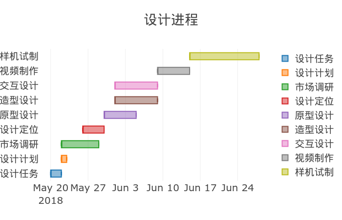
5.2.3 市场调研
综合功能要素、人因要素、环境要素等，市场调研分三阶段。
- 调研准备阶段
- 调研实施阶段
- 调研结果分析阶段：产品市场、同类产品、功能技术、使用者调研分析。
5.2.3.1 调研准备阶段
会议讨论
- 明确调研重点和调研方法；
- 成员调研分工；
- 制定调研计划书 (调研范围、调研内容、人员分工等)；
- 据调研中可能遇到的问题和希望目标用户反馈的信息，制定调研问卷和访谈问卷。
5.2.3.1.1 调研计划书
5.2.3.1.2 调研问卷
5.2.3.1.3 访谈问卷
5.2.3.2 调研实施阶段
调研方法
- 桌面研究
- 观察法
- 问卷调查
- 文献调研
- 访谈法
5.2.3.2.1 桌面研究
- 不进行一手资料采集，直接根据现有、可收集到的资料进行分析；
- 重点搜索现有电子商务平台上的婴儿监护器功能、形态、价格等。
5.2.3.2.2 问卷调查
5.2.3.2.3 用户访谈
- 用户使用产品的动机与期望
- 使用产品的时间、地点、情景和方式
- 完成预定目标的情况
- 对产品的评价和意见等
5.2.3.2.4 用户观察
- 使用记录、拍照、视频或录音等获取用户使用现有产品的行为或语音等信息；
- 针对目标用户在婴儿监护中遇到的问题、对婴儿监护器的看法，及目标用户使用婴儿监护产品过程做详细的询问和观察。
5.2.3.2.5 技术调研
- Arduino是开源电子原型平台，包含硬件 (各种型号Arduino板) 和软件 (Arduino IDE)；
- Arduino可与Flash、Processing、MaxIMSP、PureData、SuperCollider等结合完成互动作品；也可独立运行，并与软件交互。
5.2.3.3 调研结果分析阶段
- 市场分析
- 产品分析
- 技术分析
- 使用者分析
5.2.3.3.1 调研结果整理
将搜集到的资料分类，并统计分析。
5.2.3.3.2 产品市场调研分析
中国市场情报中心网站：2009年，中国内地新生儿逾1600万。新中国第四波婴儿潮，时间持续到2015年，形成庞大且充满潜力的需求市场。内地0至6岁婴童人数近1.7亿。婴幼儿用品经济年增长率超过30%，市场规模到2008年底已达8500亿元左右。2015年或超过3万亿元。
5.2.3.3.3 同类产品分析
限于时间、资金，采用次级 (二手) 资料调研法
- 整理企业内部资料（产品技术与技术信息、销售信息等）；
- 收集出版物、媒体、网络中的相关数据、信息；
- 对这些资料分析研究，获得对产品、市场、竞争对手初步、整体的印象；
- 从淘宝网获取产品功能、价格、销量等信息。
对电子商务平台上的婴儿监护产品信息进行收集，包括图片、价格、功能、 造型元素等按价格区间分类，各区间选取典型产品， 制作竞品分析表格。
| 产品１ | 产品２ | 产品３ | 产品４ | |
|---|---|---|---|---|
| 价格 | 38元 | 188元 | 1798元 | 3980元 |
| 目标人群 | 低消费 | 中消费 | 较高消费 | 高消费 |
| 主要功能 | 啼哭提醒 | 啼哭、尿湿、汗湿、爬动、踢被 | 双向对话、夜视、提示功能 | 夜视、测温、测噪声、wifi传输、对话和摇篮曲播放 |
- 婴儿监护产品主色调为白色，造型圆润可爱；
- 随价格增高，功能越来越完善，但都趋于摄像功能；
- 最高价位具有与手机直接对接功能；
- 最低价位只有啼哭提醒功能；
- 这些产品在不同程度上解决婴儿护理部分问题；
- 但在电子商务平台上销量都不高，没有特别突出的优势。
5.2.3.3.4 功能技术分析
- 资料分析
- 技术验证
查找Arduino资料，找到实现功能的办法及相关硬件。
- 通过各种传感器感知环境；
- 对传感器信号进行辨认；
- 通过控制灯光等作为结果反馈和影响环境。
- 购买电路板和温度传感器、声音传感器等；
- 进行代码编写和电路插接；
- 将功能分解，逐个用Arduino验证技术可行性。
5.2.3.3.5 使用者调研分析
- 人们在追求功能和价值同时，越来越关注产品情感体验及对生活形态的影响。
- 新晋父母在产假后一般回职场工作，陪婴儿时间较少，由其父母或保姆照顾，他们希望在上班空余看看孩子。
- 通过回收数据和访谈资料进行分析和构建人物模型。
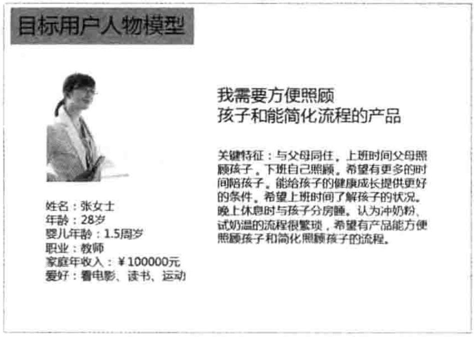
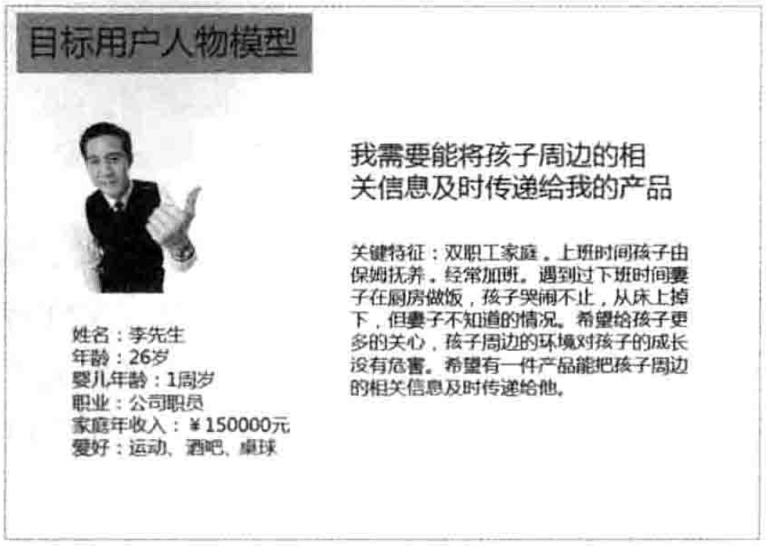
- 急切问题：婴儿啼哭提醒、室内温度监测提醒、与婴儿的即时视频；
- 潜在需求：新晋父母需要更简便的冲奶粉流程、家用电器辐射；
- 新晋父母可以为解决这些问题所承受的产品价格。
5.2.3.3.6 设计定位
将企业自身产品、服务与竞争对手区分，为企业进入市场打开缺口。
- 定位图 (感知图 perceptual map)：将产品图片放图上，参照研究，寻找市场机会；
- 按功能和价格两个维度区分，反映各产品在图中的定位情况；
- 发现中间偏右上角部分空白区域，成为机会空间。
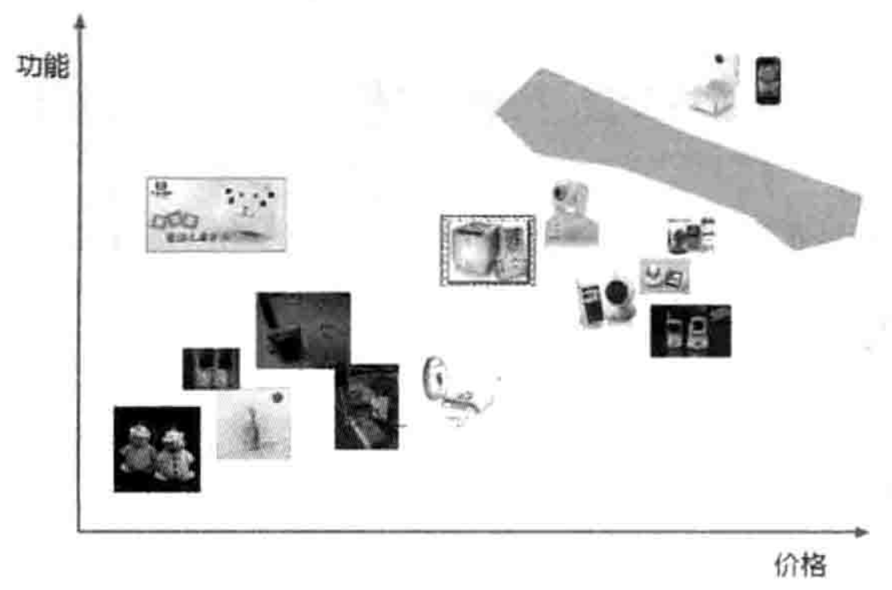
- 奶温测试和提醒
- 室温测试
- 啼哭提醒
- 实时观看和辐射值预警
5.3 婴儿监护器设计
由于设计周期限制，按分支型设计计划执行。
5.3.1 原型设计
Arduino程序开发流程
- 编辑：产生程序代码；
- 编译：转换成机器码 (修改语法、逻辑错误)；
- 链接：功能模块和函数库与主程序结合；
- 执行：将程序烧录到芯片中，完成测试。
5.3.1.1 Arduino编程
5.3.1.2 Arduino原型设计
- Arduino控制原型代码编写、原型电路连接和测试；
- 根据原型零部件尺寸确定产品外观形状和尺寸。
5.3.2 造型设计
5.3.2.1 设计草图
根据Arduino原型结构，进行草图表达。
5.3.2.2 确定深入设计方案
- 对草图方案筛选出可行方案；
- 对比例尺度、结构限制、功能要求等制约因素综合分析和提出改进和延伸；
- 生成精确的产品外观设计图，直观表现产品尺寸、体量、 材质和光影关系等。
5.3.2.3 工学分析
- 人机工学分析
- 加工工艺分析
5.3.2.3.1 人机工学分析
- 产品整体外观简洁、典雅、充满科技感，符合新晋父母的审美心理；
- 触屏操作，据手指尺寸规划触摸图标大小。
5.3.2.3.2 加工工艺分析
采用ABS一次成型技术
5.3.2.4 产品3D设计图
- 可省去部分样机试制过程，精确直观表达产品结构。
5.3.3 移动端交互设计
- 《用户体验要素》：战略层、范围层、结构层、框架层、表现层
5.3.3.1 结构层
- 用户如何到达某个页面，并在做完事情后能去什么地方；
- 流程图 (Flow Diagram) 设计用于表示执行操作的先后次序和选择路径的逻辑关系；
- 针对流程图，采用认知走查方法进行评估，验证达到用户目标的过程较顺利。
5.3.3.2 框架层
- 用于优化设计布局，以达到各元素的最大效果和效率；
- 页面布局 (Page-Layout)，用图形和文字表示页面结构、层次关系、组成元素和内容。
5.3.3.3 表现层
界面布局和交互效果
- 奶温测试模式
- 室温模式
- 啼哭提醒模式
- 辐射测试模式
- 整体构架模式
5.4 微波炉调研
- 产品调研：简介、功能、 构造、分类和发展趋势
- 市场调研：实地调研、市场份额、品牌分析和市场趋势分析
- 用户调研：问卷分析和特征用户设定
5.4.1 产品调研
5.4.1.1 微波炉工作原理
- 微波炉 (microwave) 是用微波 (电磁波) 加热食品的烹调灶具 (功率范围: 500 ~ 1000瓦)。
- 微波炉由电源、磁控管、控制电路和烹调腔等组成。
- 电源向磁控管提供约4000伏高压，磁控管在电源激励下连续产生微波，再经波导系统藕合到烹调腔内；
- 在烹调腔进口附近有风扇状金属旋转搅拌器，旋转后对微波各方向反射，把能量均匀分布在烹调腔内；
- 以2450MHz振荡频率穿透食物，当微波被食物吸收，食物内极性分子（如水、脂肪、 蛋自质、糖等）以每秒24亿5000万次的速度快速振荡，宏观表现为食物被加热了。
5.4.1.2 微波炉销售情况
- 微波炉20世纪90年代初在我国悄然兴起；
- 90年代中期完成微波炉在我国的导入期；
- 90年代末到2005年，微波炉快速发展，销量由几十万台迅速上升至几百万台，从奢侈品变为大众消费品；
- 但从2006年开始，已进人成熟期的微波炉市场停滞不前 (销量在800-900万台徘徊) 。
5.4.1.3 功能
- 食物烹调 (表里同时受热，烹调速度快)
- 食物解冻 (表里同时受热解冻，速度快)
- 食物二次加热 (对熟食、方便食品再加热，只需几分钟或几十秒，且原汁原味)
- 食物干燥、脱水 (对食物干燥或脱水，防霉变或长期保存)
- 食物保鲜 (剩菜加热几分钟，冷却后放入冰箱保存，可增加保鲜保质时间)
- 灭菌消毒 (消毒杀菌、防蛀保鲜。消毒碗、筷 子、盘、碟等)
5.4.1.4 功能特色
- 烹饪速度快 (比电灶节时60%, 比煤气灶节时55%)；
- 食物营养损失少；
- 无油烟；
- 可直接使用 (非金属) 餐具烹饪；
- 二次加热效果好 (食物不变形、不变色)；
- 解冻速度快；
- 节电节能 (微波加热，减少热损耗，节电约55%以上)；
- 无明火，使用安全。
5.4.1.5 构造
- ①门安全联锁开关：确保炉门打开时，微波炉不工作；门关上，才能正常工作；
- ②视屏窗：有金属屏蔽层，可能过网孔观察食物烹饪情况；
- ③波导口：磁控管发射的微波进入腔体通道；
- ④转轴：带动玻璃转盘转动；
- ⑤转盘支承：支承玻璃转盘并按其轨道转动；
- ⑥玻璃转盘：加热时转盘转动食物烹饪均匀；
- ⑦控制板：详见各产品控制板说明；
- ⑧光波管：在炉腔顶部，发出光波烹调；
- ⑨支架烤盘：光波烹调食物时用的托盘；
- ⑩炉门开关：按此开关，炉门打开。
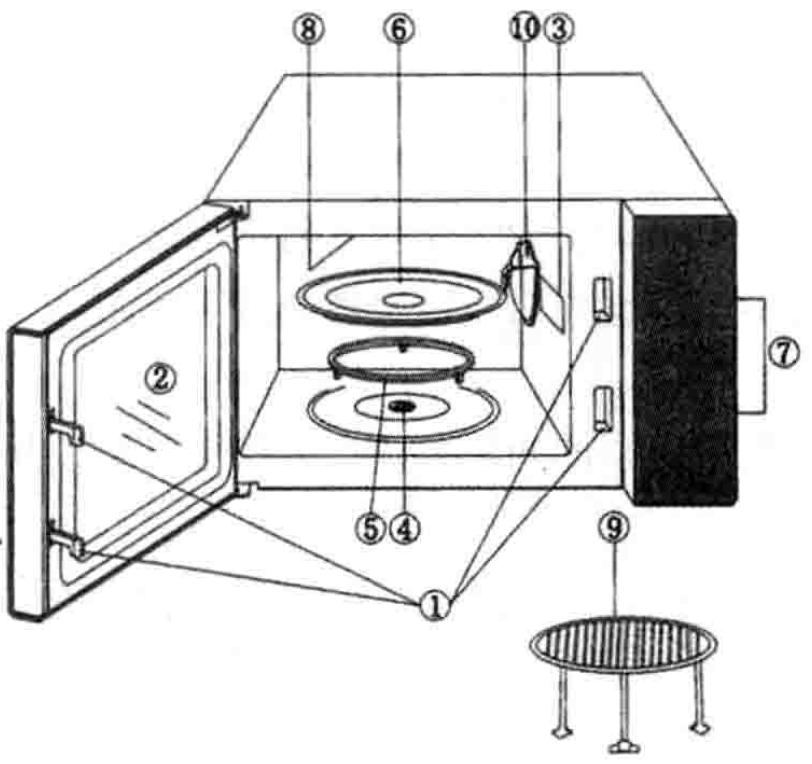
5.4.1.6 分类
- 按控制方式分类
- 按功能分类
5.4.1.6.1 控制方式
- 机械式微波炉
- 计算机式微波炉
5.4.1.6.2 功能
- 光波微波炉 (光波与远红外线结合烤食物)
- 烧烤微波炉
- 蒸汽微波炉 (直喷高温蒸汽，锁住水分)
- 变频微波炉 (强火到弱火的自动调控)
- 智能微波炉
5.4.1.7 发展趋势
- 从单一功能向多功能发展
- 从传统外观向个性化外观发展
- 从侧开门向下拉门发展
5.4.2 市场调研
- 实地调研
- 市场份额
- 品牌分析
- 市场趋势分析
5.4.2.1 实地调研
实体店销售情况及销售者在销售过程中出现的问题 (实地考察)
- 专业的电器城，如苏宁电器
- 超市的电器区，世纪联华、大润发
5.4.2.1.1 实地调研—苏宁电器
- 主要销售美的微波炉，还有格兰仕、三洋等，价格区间为299-2699元。
- 销售员说，美的内腔纳米银，有别其他品牌钢材。下拉门，左右双保险条承重4kg。
- 现有微波炉操作界：机械式、半机械式（旋钮和按键组合）、电脑式。
- 美的蒸立方微波炉加入蒸的功能，使食物更营养。
- 购买目的主要为家庭用，其次为老人、年轻人使用。
- 采访一对夫妇认为微波炉很必要，节约时间，做饭热饭简便；想买智能界面微波炉，喜欢黑色和银色搭配的镜面外观， 看起来更高档。预算为1000元左右。
5.4.2.1.2 实地调研—世纪联华超市
- 微波炉种类较少，主要是格兰仕和美的。
- 主要销售低中端产品，高端产品 ( 千元以上 ) 仅有三款，价格在 299~1488 元。
- 操作界面有机械旋钮式和智能触屏式。
- 购买人群主要为家庭，往往选择中端产品。部分为学生、打工者，消费能力不高，多选择低端产品。高端产品销售情况不好。
- 选择理由主要为价格。
- 颜色以黑、白、红为主。选购最多的为黑色，白色微波炉使用时间长后易变黄。
- 该店微波炉开门方式主要为下拉式、左拉式和按开式，按开式弹簧易损坏。
- 消费者在使用过程中出现的最大的问题: 操作智能面板时易出错。销售员解释这是由于智能按键对食品的处理时间是系统设置的平均系数，部分消费者怕食品多不会熟，出现二次操作现象，易损坏机器。
5.4.2.1.3 实地调研—大润发超市
- 主要销售美的、格兰仕品牌，价格为288~1588 元。
- 开门方式：下拉式、左拉式 、按开式
- 微波炉操作界面：机械式 、电脑按键式 、全触屏式
- 加热方式：转盘式、平板内胆
5.4.2.1.4 现有产品优点
- 新的内腔褶皱设计使加热更均匀。
- 黄金有氧生态仓能灭细菌，产生负氧离子，使整个炉腔像大自然一样清新、洁净。
- 陶瓷平板内胆比可旋转底盘扩大约50%有效加热空间，底板面积越大，加热越快，热度越高，受热面积越均匀。
- 格兰仕顶部“旋风上排”散热系统，内置旋风装置引导墙体内热空气充分排出，延长磁控管使用寿命。
- 格兰仕首推圆形智能微波炉，内部微波利用率几乎达100%，且辐射更小，更安全。
5.4.2.1.5 实地调研总结
- 品牌格局较为稳固，以格兰仕、美的为主。
- 销售渠道以家电市场、厨卫市场及超市专卖区等集中销售为主。
- 控制分电脑式 (精确控时，多程序选择，但按键多) 和机械式 (操作简便可靠)。
- 消费人群为城市家庭、初入社会年轻人士、空巢老人及少量学生和打工者等。
- 中低端产品最受欢迎，消费者往往只需基础功能，高端产品过多功能或是一种累赘。
- 随生活水平提高，高端产品占比提高。
- 消费者在意微波炉安全性，辐射较小的微波炉即使价位高一些也很受欢迎。
5.4.2.2 市场份额
中国几大主要品牌市场占有率
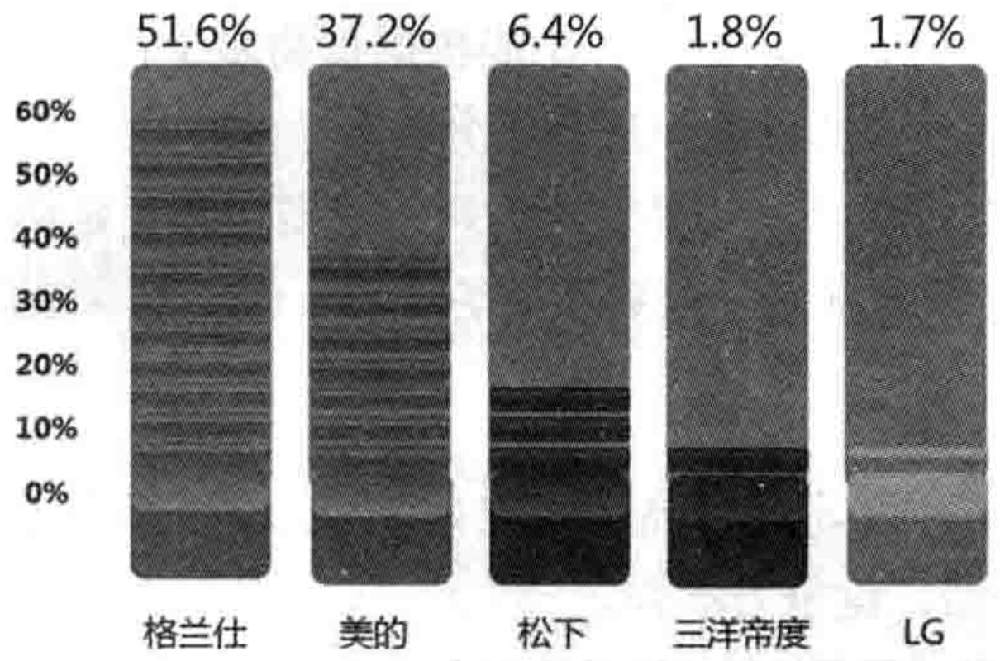
5.4.2.3 品牌分析
5.4.2.3.1 品牌分析—格兰仕
- 价格便宜，销量大
- 以中低端产品为主
- 主打光波炉销售
- 蒸汽功能使用长了后内腔不易清理；
- 由于产量大，磨具磨损严重，产品做工较粗糙；
- 一些产品内胆有凸起，显得产品不够专业；
- 门开关里面有润滑油，使用时间长了后门开关处呈黑色状态，显得不卫生 、不健康。
- 外观：球形时尚设计。精致灵动，360度可视操作空间；
- 安全：创新屏幕罩设计，辐射仅为手机的1/6，无辐射有蜂巢；
- 结构：上下翻盖设计。“珍珠贝”上开门；
- 能效：首创聚能设计，球体三维设计，聚能高效，功效提升10%，烹饪更快，味道更好，超过国家一级能效标准，节能低碳；
- 体验：人性化设计。微波炉腔内有LED 灯、和弦声音。暗藏式抠手，节省空间，轻松开启。45度智能控制面板，操作更舒适。
5.4.2.3.2 品牌分析—美的
- 外观非常吸引人且小巧、高26cm、长46cm、深3Scm以内；
- 做工精细；
- 功能多 (电脑版带烧烤功能 )，菜单多；
- 广告多，品牌知名度高；
- 价格合理，赠品多。
- 表面做工精细，但里面不细，比如底板部分等；
- 按键不太好用；
- 微波炉爆炸率较高；
- 宝宝菜单时长3分钟，固定不变，不能根据食物多少自动调节时间。
5.4.2.3.3 品牌分析—松下
- 品牌知名度高；
- 外观设计美观，造型精致，延续日系风格；
- 便于操作，且推出变频微波炉。
- 价格较高，以高端为主。全国售价1100元左右；
- 1000元以下价位产品竞争力不强；
- 售后服务不好；
- 低端产品故障率较高，尤其是内置蒸汽功能的微波炉工作后芯片易受潮，影响使用。同时维修成本高。
5.4.2.3.4 品牌分析—帝度
- 加热均匀技术
- 下拉门技术
- 六重防微波泄露技术
- 腔体整体锦接技术
- 专利降品技术
- 独创的平台技术
- 延时启动
- 儿童保护锁
- 好记芯
- 蒸汽清洁
- 多阶段亮调
- 镜面钛膜工艺
- 进口不锈钢
- 微晶底板
- 航空硅胶
- 自润化门钩
- 高效消毒
- 智能节能
- 断电延寿
- 变温烧烤
- 红外温控
5.4.2.3.5 品牌对比分析图
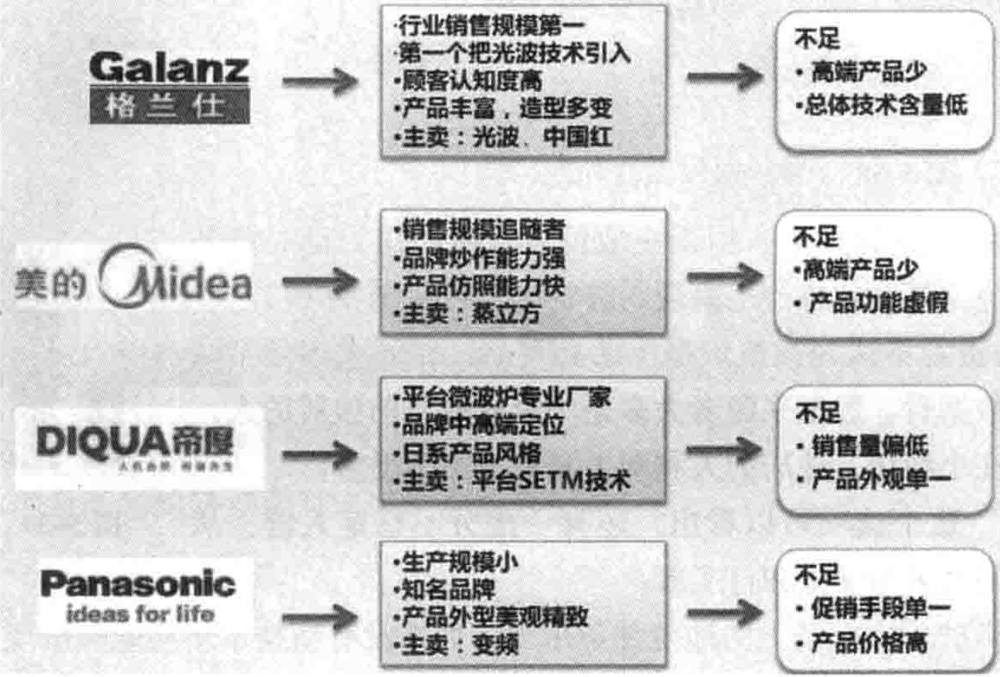
5.4.2.4 市场趋势分析
人性化、智能化、多功能化、安全化、复合化和节能化
5.4.3 用户调研
5.4.3.1 问卷调查结果分析
- 消费者注重产品安全问题，其次是价格、品牌和智能化；
- 约60%消费者不认为微波炉是生活必需品，数据来源者大多是小家庭或独居的人；
- 现代家庭正在小型化，独居的人和两人家庭正逐渐增多。
5.4.3.1.1 消费者
- 购买微波炉的消费者中年轻消费者占主导地位，大部分原因是将要组建新家庭；
- 还有部分年龄较小或较大消费者是由于生活需要；
- 另外不确定是否购买的部分人群多为学生和打工者。
5.4.3.1.2 品牌
美的占据霸主地位，格兰仕作为老品牌没有美的强势，其他品牌弱势。
5.4.3.1.3 功能
- 主要目的是热饭；
- 其次用来热牛奶，解冻和做点心；
- 烧烤和做菜是用的最少的功能。
5.4.3.1.4 操作
比起机械旋钮，更多人喜欢智能触屏，但大部分消费者对按键功能操作了解较少，年轻人大都表示会用这些功能按键，老年人则希望功能更清楚明了。
5.4.3.1.5 材料
人们对现有材料种类目的性不强，对微波炉使用材料不介意。
5.4.3.1.6 造型色彩
- 人们对造型简洁、色彩偏单一的产品更具好感；
- 更多人追求新颍时尚 、现代气息、更显高科技的产品；
- 对不同于方形的其他造型，有尝试意愿。
5.4.3.1.7 消费者评价产品缺点和希望点
- 不易清洗；
- 门板易变形，程序易出错；
- 加热后，食物取出时烫手。
- 希望能适合加热更多材质的容器；
- 操作界面更直观；
- 造型更多样化；
- 辐射更小，使用过程更健康。
5.4.3.2 特征用户设定
通过用户调研，抽象出一特征用户一一Tom夫妇
- 年龄25岁
- 房屋面积110平方米
- 从事 IT 行业，工作时间朝九晚五
- 工作稳定，收入中等
- 平时忙碌，周末放松
5.4.3.2.1 Tom夫妇生活规律
- 早上7点半出门，在外买早点，有时热牛奶和叫外卖；
- 中午12点在食堂吃，偶尔带饭；
- 晚上5点下班，两人在商业区附近吃快餐，偶尔自己做简单的蔬菜和汤。
5.4.3.2.2 Tom夫妇微波炉使用
常用微波炉加热米饭、剩菜、面食、牛奶、外卖等。
5.4.3.2.3 Tom夫妇描述
- “我们向往健康 、慢节奏生活，但各种限制过着快节奏的速食生活”
- “购买微波炉是亲戚朋友推存”
- “白色与厨房风格契合，显得干净”
- “家里冰箱放的是父母从家里带来的菜，以荤菜居多，素菜就在附近超市购买”
5.4.3.2.4 Tom夫妇对微波辐射心存恐惧
- 担心对人体损害；
- 担心食物破坏；
- 担心食物在加热过程中炸开带来的伤害。
5.5 微波炉互动交流阶段
5.5.1 头脑风暴
- 依据调研资料，小组成员进行头脑风暴，找出设计点；
- 生存之本：快速加热，形态、操控、审美、安全的综合考虑。
5.5.2 人机环境分析
5.5.2.1 环境
每件产品与其它产品相呼应，构建完整厨房环境。
5.5.2.2 性别分析
- 微波炉与厨房其他电器在风格和造型上协调；
- 设计上考虑不同“性别”搭配。
5.5.2.3 情节定义
通过情节定义使设计师具有用户同理心。
- 谁：Tom，从事IT工作；
- 做什么：要能方便加热饭菜的厨房空间；
- 为什么：微波炉操控复杂不方便，Tom是左撒子，对为右手设计的布局不习惯；
- 怎么样：最好是下拉门，操控面板最好朝问上方；
- 什么时候：每天下班回家后。
5.5.3 分析模型
5.5.3.1 价值机会图 (体验即价值)
| 项目 | 属性 | 价值 | 描述 |
|---|---|---|---|
| 情感 | 冒险 | 中 | 延续使用帝度产品时所期待的高品质体验 |
| 独立 | 低 | 可以在工作环境中独立存在 | |
| 安全 | 高 | 感觉安全可靠 | |
| 感性 | 高 | 与厨房及食物相关的温和有效感 | |
| 信心 | 高 | 相信它能够按要求完成任务 | |
| 力量 | 中 | 适应和支配工作环境的能力 | |
| 人机工程学 | 舒适 | 高 | 稳定放于固定位置，操作舒适 |
| 安全 | 高 | 操作者得到保护，不受微波辐射 | |
| 易用 | 高 | 存取食物方便；操作简单；易于把握 | |
| 美学 | 视觉 | 高 | 正确清晰的视觉系统，提示当前操作与使用 |
| 听觉 | 高 | 状态产品噪音小，并且在紧急情况下能够发出有效警告 | |
| 触觉 | 高 | 表面、工作界面有适合的材料和图层以提高清洁、使用效率 | |
| 嗅觉 | 高 | 减少食物产生的异味 | |
| 味觉 | 中 | 降低过程中对事物味道的影响 | |
| 特性 | 适时 | 高 | 为迅速发展的现代化厨房生活建立一种新的美学体验 |
| 适地 | 高 | 设计必须适合现代厨房环境 | |
| 个性 | 高 | 稳重而不失温馨，视觉上有一种全新的感觉 | |
| 影响 | 社会的 | 高 | 给使用者提供良好操作体验；符合安全与健康的要求 |
| 环境的 | 中 | 符合帝度其他设备与家庭设备已有的环境标准 | |
| 核心技术 | 可靠性 | 高 | 拥有稳定的工作状态，易于维护和修理 |
| 可用性 | 高 | 产品能满足安全、准确加热及烹饪食物的要求 | |
| 质量 | 工艺 | 高 | 保持与其他帝度产品的一致性，看起来高档 |
| 耐用性 | 高 | 在使用寿命期间，产品能够保持良好地工作状态 | |
| 效应 | 利益效应 | 高 | 为几乎空白的帝度微波炉领域创造新的价值 |
| 品牌效应 | 高 | 创造一个新的拥有自己设计语言的微波炉品牌 | |
| 可扩展性 | 高 | 能够根据原始设计衍生出一系列产品 |
5.5.3.2 定位图 ( Positioning Map )
- 用技术和造型分别作为横坐标和纵坐标量度；
- 位于象限右上角的产品结合了造型和技术，具有显著价值。
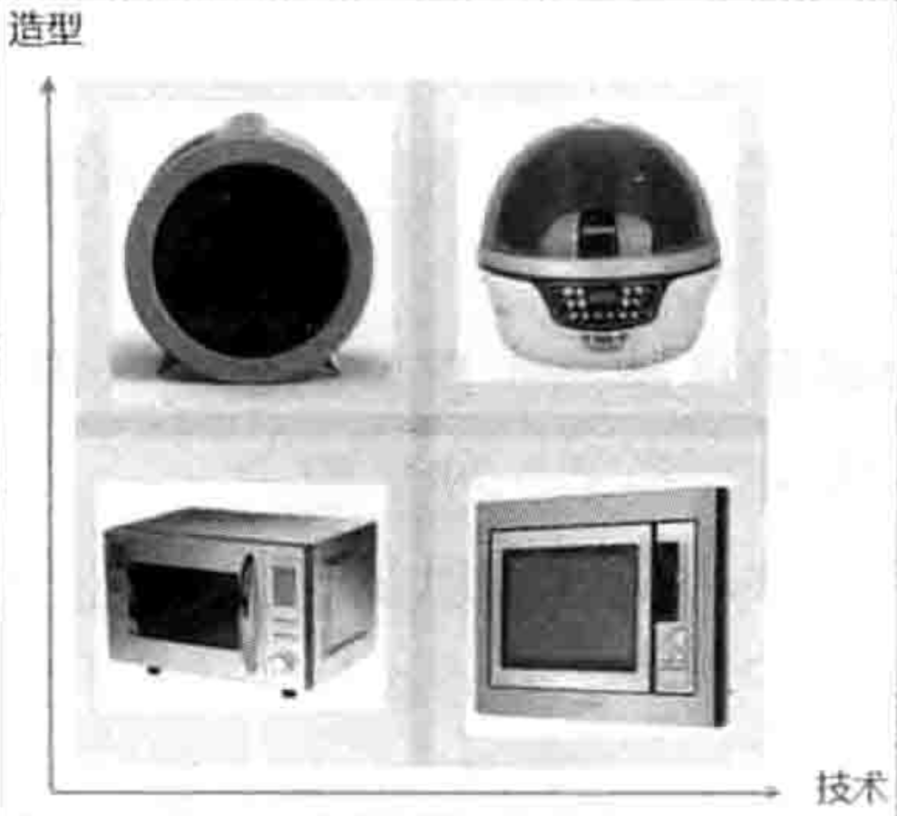
5.5.3.3 部件分化矩阵 PDM
- Part Differentiation Matrix 将产品零件和组件归类的策略
- 通过分析各零部件对用户生活方式的影响及零部件本身的复杂程度；
- 决定哪些零部件更需要整合不同专业领域来设计开发。
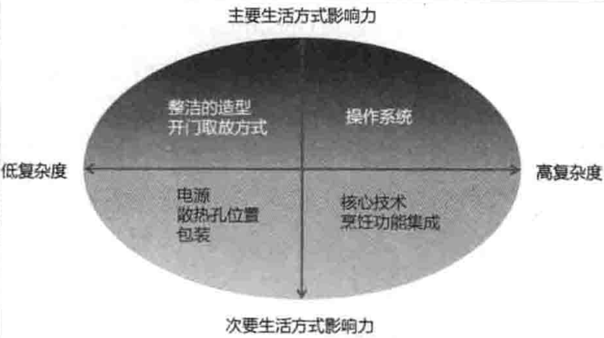
5.5.4 界面设计
5.5.4.1 界面设计原则
- 一致性
- 提供线索
- 可以被学习
- 容易被预测
- 给予回馈
5.5.4.2 界面设计
- 对现有微波炉界面调研；
- 设计简洁易懂的操作界面。
5.6 帝度微波炉设计
5.6.1 设计语言
5.6.1.1 U形线条探索
U形线条常见于高端精密电子产品，诠释电子产品优雅感和科技感。
5.6.1.2 三角形探索
三角形常见于需要稳定和支撑的产品结构中，通过三条边和角度变化产生丰富效果。
5.6.1.3 圆球形探索
圆球形给人以饱满、圆润和流畅感，既突出科技感又拉近产品与使用者的关系。
5.6.1.4 设计语言建筑形态探索
将从建筑上提取的造型元素融入产品设计中可以使产品技术感与美感并存。
5.6.2 设计方案
- 对设计语言提取，综合分析产品功能和定位；
- 提出三套设计方案：平衡、冰与火、升波。
5.6.2.1 平衡
由功能模块、控制模块、散热模块和底板四部分组成。
5.6.2.1.1 灵感来源
灵感源于西班牙阿利坎特卡尔佩悬崖上的住宅。
- 阳光下，悬崖上，住宅彤成阴影，平静地俯瞰地中海；
- 夜幕中，长条灯光极富存在感，安静平和。
5.6.2.1.2 造型特点
- 简单平衡的美感；
- 调整以往布局，大部分原件置于上方，用户在使用时与对象正对；
- 内部结构处理，使用微波炉的过程更加明了开放，空间更有效。
5.6.2.1.3 造型敞开状态
5.6.2.2 冰与火
5.6.2.2.1 灵感来源
灵感来自建筑，冷静不冷酷，纯洁中带锐利，变化又不失稳定。
5.6.2.2.2 造型特点
“冰与火”
- 纯几何造型及象征高端品质的商务灰和金属质感，像一块冷峻的被切了一角的冰块；
- 结合微波炉使用功能形成“冰中火”。
5.6.2.2.3 提醒设计
- 六条贯穿炉体LED灯，工作开始前三秒预闪和警告使用者远离工作区 , 避免微波辐射；
- 在微波炉工作中, 灯条持续亮起，工作结束后，灯条闪烁和警示声提醒取走食物。
5.6.2.2.4 安全设计1
微波炉门板和炉体斜面契合，密封更彻底，有效防止微波泄漏。
5.6.2.2.5 安全设计2
炉腔内有自动检测装置，当检测到有禁忌放入的食品、容器等，会通过LED灯显示，避免微波炉腔内着火 、爆炸等事故。
5.6.2.2.6 界面设计
- 位于三角区，全触摸屏，通电后显示 LED 灯光文字；
- 类似手机界面，简洁不简单，分多级菜单，避免繁多无序的功能按键及误操作；
- 加热或解冻时，界面据食品质量等显示建议的火力和时间，配合手动微调；
- 选智能菜单时，微波炉自动调整时间和火力、一键式操作。
5.6.2.3 升波
5.6.2.3.1 灵感来源
- 灵感源于挪威JOTUL公司F470独立式燃木壁炉；
- 壁炉通气管道给予设计师移动的灵感；
- 结合微波炉特点，充分考虑与人亲近的意味。
5.6.2.3.2 造型一特点
悬挂式球形内舱，以气球为原型，顶部散热，主板与加热盘合体。
- 优势：散热很好、造型新颖、界面人机、节约空间；
- 不足：整体不够稳定，无法加热大盘食物，高空加热带来不安全感。
5.6.2.3.3 造型二特点
壁挂式半圆柱筒状、加热盘与主体分离、主板和界面在上方、加热可视 、触屏界面。
- 优势：较稳定、加热均处、界面隐藏更多内容、给人安全感、屏幕防油烟污染；
- 不足：造型单一、空间利用率不够。
- 壁挂式
- 智能管家式服务 (与冰箱 、网络数据连接)
- 侧面散热
- 墙壁投影更多显示
- 加热舱可视
- 造型变化、更多空间利用
- 更低成本
- 加热板降到桌面平台更易取放食物；
- 黑白搭配，形象颜色令人亲近；
- 充分利用周围环境节约空间。
5.6.3 模型制作
5.6.3.1 材料
微波炉主体选用不锈钢，其他透明部分为微晶玻璃。
5.6.3.2 工程视图
准确展示产品各方面尺寸和加工标准，为工程人员加工制作产品提供技术支持。
5.6.3.3 草模
5.7 思考题
应用产品系统设计方法设计一款3C产品 (计算机Computer、通信Communication、消费类电子产品ConsumerElectronics)。
- 3~4人为一小组；
- 确定产品设计方向，完成产品调研 、用户分析、设计制作等流程；
- 以PPT形式对本小组产品系统设计的过程和最终成果进行展示和汇报。
- 4月7日(周日)23:00前发送到anhongz@outlook.com
- 文件名：小组成员姓名-作业六-标题
- 文件类型：PPT或PDF等类型演示文件
6 产品系统设计发展趋势
- 产品设计发展趋势
- 产品系统设计核心走向
- 持续推动产品系统设计
6.1 产品设计发展趋势
- 产品功能
- 产品使用方式
- 产品设计定位
- 产品设计者
6.1.1 产品功能
- 综合化
- 信息化
- 网络化
- 智能化
6.1.1.1 综合化
- 多功能整合到同一产品
- 手机功能：电话、短信 –> 掌上电脑
6.1.1.1.1 综合化作用
- 减少生产资料消耗，降低生产成本；
- 节省运输空间和使用空间；
- 降低使用产品过程中的学习成本。
6.1.1.1.2 综合化实例
- 惠普多功能激光一体机集成打印 、复印 、扫描、收发传真等功能；
- 降低成本 、节省能源。
6.1.1.2 信息化
产品使用功能和体验功能共同构成企业品牌核心元素，推进产品发展。
- 使用功能
- 体验功能
6.1.1.2.1 使用功能
如，手机具有电话功能
6.1.1.2.2 体验功能
- 产品提供某种服务以丰富、完善人的体验。
- 如，用户拨打电话时，需完成哪些操作，经过哪些步骤，通话质量如何等感受。
- 键入电话号码自动提示功能
6.1.1.3 网络化
产品功能借助网络手段实现。
- 美的FZ4015电饭煲具有24小时网络预约功能，上班前准备好晚饭，下班享用。
- 苹果遥控器 Apple Remote 能在房间任何角落控制音乐、照片和DVD。
- 数字电视通过网线实现百事通海量点播，享受百事通新闻、体育、影视、音乐等服务，并通过遥控器实现上网。
6.1.1.4 智能化
- 工业机器人完成过程复杂 、耗时费力的标准化生产流程，解放劳动力；
- 部分研发人员和制造工人不再考虑如何制造，而考虑制造什么；
- 网络三维打印实现远程真实物品交流；
- 自动化、智能化工业生产 (工业4.0, 工业2015)。
6.1.2 产品使用方式
体验设计以顾客感性需求为设计目标，通过生动有趣的产品，营造完善的使用感受。
- 声音和光线强弱实现对灯的控制；
- 使用手势及身体姿势控制和操作产品，Xbox Kinect体感游戏；
- Google眼镜捕捉视线移动和语音输入控制，眨眼拍照，查询天气路况等；
- 嗅觉电视让气味飘向屏幕特定位置，如炸鸡出现在屏幕左上角，那里就有炸鸡气味。
6.1.3 产品设计定位
- 功能差异化、个性化指对产品的功能、效果、性能等多样个性化需求；
- 造型差异化、个性化指人们对产品形态、颜色等有差异化、个性化需求。
6.1.3.1 个性化
个性化市场策略和设计手段，细分市场，拓展产品设计空间，获得更大市场份额。
6.1.3.2 差异化
- 功能创新
- 性能改善
- 量身定做
6.1.3.2.1 功能创新
- 功能创新获得竞争差异化优势。
- Eliminate, Combine, Separate, Copy, Segment, Vary, Maximize, Invert, Adapt, Magnify, Import
6.1.3.2.2 性能改善
因地制宜进行产品差异化设计
- 夏天部分地区中午气温超50摄氏度，快速制冷成突出需求；另外，经常停电，电压不稳；海尔空调具备强力快速制冷、高温低电压启动功能；
- 冬天北方地区最低温度降到0，海尔空调推出制热产品方案。
6.1.3.2.3 量身定做
- 海尔静音洗衣机避免夜间洗衣噪音大 (日本木结构住宅, 主妇习惯晚上清洗衣服)；
- 海尔快捷高效洗净的 Smart 系列洗衣机，受到新生活群体青睐。
6.1.4 产品设计者
- 设计走向普通大众；
- 人们知识结构、动手能力和思考能力的提高，为参与到设计中提供条件；
- 人们对个性追求不断提高，为获得心目中满意的产品，开始动脑动手参与设计。
6.1.4.1 参与式设计模式
- 把用户引入设计过程中观察、了解用户思维模式，使用产品方式；
- 用户自己动手画原型，掌握用户心智模型；
- 用户角色发生改变，从产品使用延伸到产品设计。
6.2 产品系统设计核心走向
- 服务设计
- 可持续设计
6.2.1 服务设计
6.2.1.1 服务设计定义
有效计划和组织一项服务中涉及的人 、基础设施、通信交流及物料等相关因素，从而提高用户体验和服务质量的设计活动。
6.2.1.2 服务设计对象
所有提供服务的行业 (有形或无形)
- 饭店、学校、机场、医院、公共交通
- 手机、电视和网络
6.2.1.3 服务设计作用
- 有效提高企业形象，使消费者对服务产生更大满意度，吸引更多商业机遇和投资；
- 帮助企业提高服务效率从而节约成本；减少有形产品在生产过程中对资源和能源的过度使用；企业更好地控制服务所提供的内容，获得更多回报。
6.2.1.4 案例：悉尼攀桥旅游
- 于1932年建成通车的悉尼大桥共12车道，跨度503米，拱部最高处距海平面122米。
- 攀爬过程中，悉尼港和悉尼歌剧院尽收眼底。
6.2.1.4.1 悉尼攀桥内容
- 白天和夜晚 (恶劣天气除外)，每隔10分钟一队由12人组成的攀登小组向拱顶出发；
- 攀桥历时3小时，由岩石区大桥基座出发，沿指定路线攀登大桥后返回基座；
- 攀桥前，领队讲解攀爬技巧，播放视频。参加者由模拟器熟悉攀桥技巧，穿攀桥装；
- 领队配数码摄影装备，确保捕捉到每位攀桥者登上桥项的精彩镜头，附送团体照；
- 儿童需年满12岁，孕妇不许攀登，攀登者不得酌酒，呼吸测试确保血液酒精没超标；
- 攀桥需98澳元。
6.2.2 可持续设计
3R原则：Reduce, Recycle and Reuse
- 在产品达到特定功能前提下，材料、能源在制造、使用过程中消耗越少越好，产品在使用过程中或使用后对环境污染越少越好。
- 合理使用材料，以最贴近自然，对人体无害，节省能源的材料满足产品功能需要，以最少用料实现最佳效果
6.2.2.1 绿色汽车
- 使用能源 (如天然气、液氢、电和太阳能等) 符合低污染和低排放原则
- 在开发设计过程中，每个环节考虑环境效益，减少对环境的破坏，包括减少能量消耗、提高能源使用效率、使用新材料和新结构以降低物质消耗 、便于零部件回收利用、减少城市空间占用、提高交通通行率等。
6.2.2.1.1 奔驰公司汽车全生命周期回收目标
- 从汽车设计开始注重汽车可回收性；
- 生产和使用过程中产生的废弃物 、废能和废液等全部回收；
- 汽车报废时还能拆解回收；
- 近期目标包括塑料和废油液在内的整车回收率达95%以上。
6.2.2.1.2 沃尔沃公司与瑞典环境研究所联合开发EPS系统
- 数据收集与分析：材料，燃料提炼 、制造、使用到废弃全过程对环境的影响；
- 据汽车制造材料算出每种汽车的环境载荷，以设计出最优生态汽车；
- 塑料或玻璃纤维取代钢板，减轻车身，增加燃料行程及减少装配成本；
- 减少轮胎宽度从而减少摩擦，达到省油目的。
6.3 持续推动产品系统设计
- 技术革新、环境保护、以人为本是持续发展的时代要求。
- 产品系统构成的可持续点建立在以往演变规律的基础之上并加以发展。
6.3.1 发展热点
- 纳米技术的应用带来新材料热点
- 流线型趋势带来新风格产品设计
- 生物工程技术发展带来新品开发
6.3.2 系统设计的时代价值
- 社会兼容
- 产品拓展
- 特殊匹配
6.4 思考题
对未来设计趋势进行综合预测或某一新方向的预期，并对预测 (预期) 结果的合理性或实现路径进行分析说明。
- 分析说明可结合图表与文字
- 可配未来设计概念图
- 4月14日(周日)23:00前发送到anhongz@outlook.com
- 文件名：学号姓名-作业七-标题
- 文件类型：Word或PDF文档